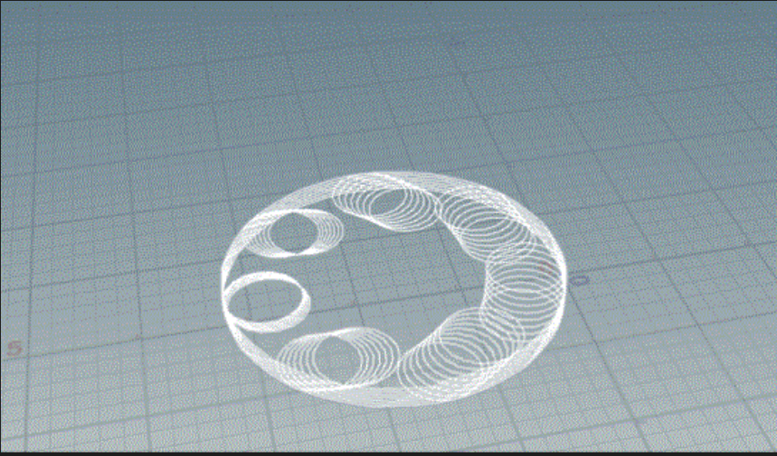
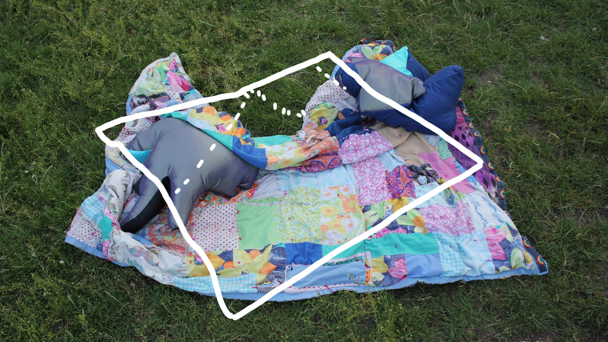

03_Disobedient_Action_Research_Cycles
Configuration
Entries
Disobedient Action Research Cycles
This chapter follows on from the framing of the last two chapters to discuss how I have formed a methodology for this research project. The methodology I have taken up is a situated implementation of disobedient action research. This disobedience and its foundations of action research follows the many crip and queer figures that were called on in the last chapter, and especially within 01.02.04_Cripping_Technoscience, where it demands to step out of line, to find other routes that institutional inflexibilities do not have the capacity for and to defiantly take those actions now.
In this move to shake off the the academic table of methods that holds us in-line, I turned to action research as a place to empower the position of practitioners (in this case collaborators and I) as a knowledge creators. This methodology approaches these experiences by giving depth and insight to relations where an embodied framing makes room for it to be understood in action, from a situated perspective and knowledge. I then move to orient this methodology through first person action research, where I bring in the background of my research and to make room within it for a situated embodiment of these inquiries. From this position and that of my crip framing, I felt this research necessitates a disobedient approach, one that manifests a disorientation of the scope and norms of the actions within action research. It poses this work to take on direct actions together right now! Of refusing to be a part of, assimilate to and be quiet about certain politics and their violent relations!
After this setting up of a disobedient action research methodology I go on to discuss how I have taken up this methodology in three (ish) cycles of action and reflection, and how they have been approached at different intersections of social and technical infrastructures within and around institutions.
Action research
This section brings into focus why this research has oriented towards action research as a methodology. Following on from the 01_Disability_justice_and_life_affirmation_flipping_the_table chapter and its framing of embodied and relational politics I have found that action research aligns and intersects at a number of places that are key. To trace these crossing lines I am working with Judi Marshall's notion of Living Life as Inquiry (LLI) (Gearty and Marshall 2021; Marshall 1999) and Living Systemic Thinking (Marshall 2004) that make room for me to not only take on the calls for action I have made in the previous chapter but also to bring into those actions the necessary reflection that quality inquiry and research entails[1].
Marshall's LLI (1999; 2004; Gearty and Marshall 2021) work is a specific type of action research named first person action research, which is where the first intersection crosses paths with my proposed framework. In first person action research Marshall is in many ways practicing a methodology that makes room for the background of the practitioner to settle in, like Ahmed (2006), and brings in the context, relations and feelings of the person making the research. In her essay Living Life as Inquiry -- a Systemic Practice for Change Agents (2021) with Margaret Rose Gearty, which acts as a 20 year celebration and retrospective since the paper and method was first published and to examine how LLI has been taken up in many orientations. There are a number of focuses in this essay on how Living Life as Inquiry can be practised but there is a key focus on how it makes room for an embodiment of research. Marshall phrases it as "Inquiry has woven itself into my life" (2021, 454). This embodiment and weaving of research into life is key for my practice as it makes room for me to wiggle into this research, my experiences of being crip and queer within and around institutional limits and their relations. It let's me situate this research to my context, to think through what it means for me as a middle class 'white', crip and queer researcher, with chronic illness, pain and fatigue to be approaching deeply neo-liberal and efficiency driven institutions in the UK. This embodiment of research also enables me to think about how these positions of practice and of making embodied actions is itself a space of knowledge generation, and one that finds the capture or determination of these knowledges impossible in many ways. In Living Systemic Thinking (2004) Marshall gives the example of her colleagues and her reflecting on a review process of a student, to a fine grain of reflection, and shows how each person interprets these relations differently. She approaches this not to de-validate the difference and nuance but to work with these varied perspectives as other orientations of an issue, that form their own understandings of these actions and their relations to them (ibid, 15). Marshall's position on the embodiment of research also offers me to bring feelings and affect into practice, intersecting with a crip focus on affectivity. This navigation of embodiment informs my orientation of actions and their deliberation to not be led by but to account for how it has felt within the relations, how what is expected causes friction or how what I desire to undertake brings joy.
With this engagement of self, of bringing feelings into action, and those actions into inquiry and knowing they pose another way of orienting myself. Marshall and Gearty through their approach to LLI also ask of me to think about how I direct or orient myself, much like I discussed in the 01.01.00_Orienting_the_table section through the work of Ahmed. With LLI they think through how these practitioner and actioned knowledges that I practice, can in themselves form alternative orientations to those of hegemony and institutions. In an essay called Living Systemic Thinking (ibid) Marshall terms it as "sense making", and later on her and Gearty ask us to work with this sensing think through "when to persist or desist" (2021, 457) in direction. With this they present Living Life as Inquiry as a method to process what to inquire into and how to orient relational actions towards that outcome. To do this in this embodied context they work with a few notions to consider how to feel out what is appropriate to be done in that context. They talk about "staying fresh and open" (ibid, 455), where by taking life into inquiry, we question our habits, our sedimented patterns and norms to think through and feel out other approaches and paths to the outcome. To do this they propose "checking for signs of vitality" (ibid, 455) as a way to do pulse-checks, to ask "How am I, here and now?", and to balance between inquiring mindlessly forward and being stuck within the fine grain and frozen. They also pose these pulse-checks to be embodied and not always consciously reasoned to aim to unravel the notion of "pursuit" within research. This is where I can move away from a determined end goal or sedimented straight path and tending towards feeling out dynamic and emerging research to decide the next actions to make. They also bring up the notion of "working with emotions"( ibid, 456) as a way to inquire into "what is really important", of connecting to the issue on an embodied level and letting these feelings not determine but be engaged in what I feel I need to tend to.
This leads onto their proposition of "practices of discernment" (ibid, 457), which interestingly isn't about where to act but more about when. As they note it can be about discerning when to be "waiting things out" and when to be working out "what is what" before deciding how to act, positioning Marshall's notion on "when to persist or desist" within time. Practising this within Ahmed's framing of inherited and sedimented relations makes room for me to think, where am I now, and what can I change within my reach. In a textural response to this notion Marshall and Gearty give the image of the Heron/yoga pose, of one leg in the water, of feeling the ripples and many forms of data lap against your body and to patiently discern what they mean and what/when to action. They follow this texture with their notion of "the timely move to action" (ibid, 458), which continues to ask how and when to take actions of inquiry but also where. In this embodied methodology they prompt us to think through where this can be in the relations we are entangled into, which can be an internal action on the self, or an "inward action" as they term it. In doing this though they don't divide between what they call the inward and outward arcs of action, but instead see them as performances of an entangled process. This prompts this research to re-scope where the actions of action research can be taken when embodied in research, and has pushed me as a practitioner to inquire into how I am internally orienting practices and how this is affected by and affecting outward actions.
Following on from (but also maybe before/during) is their conception of reflection of action. Why I say maybe before/during is due to the troubling of the separation of action and reflection that LLI encourages. Instead with LLI Marshall and Gearty ask me to be open to the complex ways that these movements of action and reflection are entwined and interdependent, with reflection being in many ways an action in itself. Within this dialogue of reflection in mind they form another few notions to think with and help reflect on what matters within and around our actions. They ask us to revisit the "inner and outer arcs of attention" (ibid, 458), and that by taking time with both the internal embodied and external actions each will inform and develop the understanding of one another. Somewhat intersecting with crip theory they compare the entanglement of these arcs to that of the bodymind, and its move to dissolve the boundary between the two, where action and reflection move as one muscle. This is also closely read into in Living Systemic Thinking (2004) where Marshall takes up a close reading and reflection of their approach at each stage in line with feedback from colleagues to deliver a quality emerging inquiry into institutional processes through her enactment and relation to them.
Returning to LLI they also work with the notion of "the processual nature of inquiry" (ibid, 459) that prompts us to approach these cycles of sense-making as ways to move beyond the determined and inherited generalised models of research and instead situate these orientating processes within the embodied practices of the researcher. In these modes of orienting they pose knowledge as ephemeral and fleeting as it sits within the relation of action and practice. They open to reflection that does not model, generalise and predetermine moments but evoke practice that makes room for me to visit the relations I engage in afresh to rethink the sedimented paths we take towards them. In this move and throughout the paper they also open up to what they call textures, such as the Heron description above, which takes the form of images, figures and reflections that act as experiments of how to express these feelings, practices and enquires where words may fail us. This orientation of modes of reflection within Action Research intersects well with a crip position, and one which I relate to a lot, where words can escape me. Here they make room for these discursive knowledges through embodied technical and social practices to be validated as generative ways of getting to know the relational "problems" at hand through other revealing practices. How drawing, metaphoring and coding can be ways to reflect and key modes of action, inquiry and sense-making. The last notion they leave us with is that of "reviewing generative/degenerative aspects of inquiry" (2021, 459), and is a very kind one that in many ways echo's that of pulse-checking. With this notion they discuss the balance you have to take in first-person inquiry to not get caught in self-critical cycles, which can stop actions from taking place and trap researchers inward. To manage this line they say to monitor what is being looked at, with degenerative inquiry being characterised by "over-rumination or joylessness". Here again aligning with a crip move to imagine disalignment as a generative site, and one where there is always a possibility of joy and pleasure. This is again where in places within myself and in relation to others, we can inquire into how these sites of friction as not invalidated and determined actions of humiliation, pain and duress, but how they make room for the possibility to be joyous and pleasurable places of inquiry.
Bringing LLI into action in this research has empowered me undertaking it in a number of ways. It has made room for me to unfold and situate the research within my manys contexts and practices as a crip and queer researcher throughout the PhD. It has also prompted me to engage my feelings, bodily relations and emotions into an embodied research practice. It has given space to the technical and social practices I undertake, of thinking through code, finding frictions in coalition and of trying to survive within and around these institutions, as generative and informative textures of this research. It has also buffered these crip and queer notions of finding our own paths together, and that those are ones we desire, find vital and map to our bodies. In retrospect first person inquiry has given my research practice the capacity to change paths. For example a key turning point in this research is that through quality inquiry I decided to desist working with and for certain logics of automation and organisation that invoke and determine dominative centralised control and come from violent ableist and eugenics histories. Instead to step back, reorient and persist at the practice of social infrastructure that inform how to decentralise and disorient their technical counterpart through community interdependence and critical access.
In this move to desist to then persist I found though that there were some crip frictions I have with this framing of LLI and Action Research here. Even though they counter narratives of pursuit and make rooms for finding my own way through embodied practices, their focus can be somewhat be Cripped more in relation to instituional processes. When Marshall references Meyerson and Scully's concept of "tempered radicals" (1999, 3) it is hard to imagine crip theory so normalised, subdued and conformed. Of course we get "heated up and cooled down" when "being simultaneously outsider and insider" of institutions, but it is not about getting "tougher". I know that in my inquiry I have moved, sometimes without reason from being tempered, to flexible, to brittle, to wet, to rusted, to loose and to tempered again. This isn't to say this divergence isn't possible within First Person AR, but the Crip orientation I desire aims to move beyond the need to be tempered towards institutional norms and our manifestings, as being tempered may make unlivable the many approaches to a crip notion of justice and radical access before they even begin. This is not to say being tempered and playing the valid role of "user" or "expert" to subvert or hack, or to reflect on the ways we emerge in relation to institutions are not valid in this critique. It is instead to disorient this table of action and to make known-able through critical access, the labours and their knowledges that these institutions invalidate. In relation to my experiences from and orientation to institutions and their imaginary possibility for these radical politics and social relations we call for is that they are limited through very restrictive terms that collectively in my collaborations, we can only form small amounts of wiggle room within and around. To find the space and relations that I desire and that can start to make room for these sorts of imaginary practices I turned disobediently from methods where I have to be tempered, and I have disoriented this through crip theory, interdependence and of movement making. This isn't to neglect the change I can and have made in the institution, but it is to pivot from crip futures they cannot hold. It is to make time and room to feel out my orientation towards these more restrictive and sedimented organisational practices of institutions, and figure out how to counter them.
Why not other Action Research?
It is of course sensible to ask, and for me to reason why I have decided on First Person Action Research instead of other modes of AR. This is specifically true when it comes to Crip studies where the sedimented path into action research would be through participatory research. A quality example of this, and similarly to my research is the blurring of the lines of community and institution is Laura J. Wernick's Learning Disability Justice through Critical Participatory Action Research (2023). With this work she focuses on the notion of participatory to surface the ways that disabled interdependence is what has made her research happen. She also reflects on these exchanges in a very embodied, vulnerable and situated approach that a Crip studies approach encourages. This embodied mode being one that also crosses heavily into First Person Action Research. In my research I have similarly manifested it through these Crip support networks, through interdependence and from community, and I definitely do not want to underplay their participation in this work. I do though chose to orient towards First Person Action Research as I want to focus not so much on disabled people participating in the institutional norms or within disabled exclusive space, but instead towards how crip people as active change makers can transform the more intersectional organisations, institutions and systems around us. In this move putting pressure on, making friction with and giving feedback to the ableist institutions and relations we are in-touch with. This again isn't to say that the work like Wernick's that practice Participatory AR methods are not in reach of this change on their bodily horizon, but it is to instead orient towards this, and see how this imposition can change relations and politics around us.
Bringing Disobedience Into Action
When it comes to bringing these disobedient methods into my Action Research, I am informed by TITiPI's questioning of the roles and relations we play when debugging systems. In this thinking about the scales, relations and capacities we need to make room for the communities, technologies and change we desire right now. This disobedience intersecting with the crip cyborg (Kafer 2013), and the health rebel (Kafer 2017), engaging with and stepping out of line from the violent norms of computational systems and institutional logics. In doing this I am also turning to see how these practices of forming counter narratives, figures and manifestings of sociotechnical fables can be brought into action in the making of collective infrastructures. Asking how can my collaborators and I imagine other ways of relating with these technologies in retreat from their violent origins and contemporary uses and towards manifesting our own imaginaries and politics around them.
With a queer disobedience I also take actions through transdisciplinary approaches which echo Ahmed's wiggle room (2014) loosening of determined roles to performances. In this wiggling making room with this disobedience for the roles and discipline within research, forming queer lines between them. Here I aim to perform these disciplines with respect and to high quality but along my own lines that subvert the ones they were prescribed to as isolated institutional discipline.
Disobedience has also been taken along inward arcs of action and into my internal enquiry and practice. I do this to think through how I can orient my inquiry by being in touch with the relations I am entangled in as a crip and queer researcher. This has taken the work mentioned in the 01.01.00_Background of the introduction to this research, being individually focused and technologically centred practice, to now being disorient by collective bodies and practices that orients the social of infrastructure, with the assistance of technical. Taking up disobedient action research made room for me to desist from engaging in what felt like assimilation practices of computing, to then move to persist with other ways of imagining crip capacities for care, coalition and interdependence.
Throughout the research there is a returning to a disobedient motion. This can be read in the 02_Crip-Tic_of_Vignettes with experiences of surviving institutions through refusal. There is also disobedience in my work of 04_Configure-Able_Methods and the forming of a critical access informed approach to the configuration organisations and infrastructure. These disobedient crip methods centres points of impact and frictions to figure out localised interdependent ways towards collective infrastructural relations. These disobedient methods are also taken into the two later inquiries of 05_In-Configure-Ability and 06.00_Intro, where I explore them in action with different collaborators. This disobedience is also overflowing from this research in the ways the 08_Conclusion covers, of how these methods are already unfolding into future projects and infrastructures made with and for communities through disobedient intersectional queer feminist and crip practices of manifesting action now.
Bringing Disobedience Into Action
When it comes to bringing these disobedient methods into my Action Research, I am informed by TITiPI's questioning of the roles and relations we play when debugging systems. In this thinking about the scales, relations and capacities we need to make room for the communities, technologies and change we desire right now. This disobedience intersecting with the crip cyborg (Kafer 2013), and the health rebel (Kafer 2017), engaging with and stepping out of line from the violent norms of computational systems and institutional logics. In doing this I am also turning to see how these practices of forming counter narratives, figures and manifestings of sociotechnical fables can be brought into action in the making of collective infrastructures. Asking how can my collaborators and I imagine other ways of relating with these technologies in retreat from their violent origins and contemporary uses and towards manifesting our own imaginaries and politics around them.
With a queer disobedience I also take actions through transdisciplinary approaches which echo Ahmed's wiggle room (2014) loosening of determined roles to performances. In this wiggling making room with this disobedience for the roles and discipline within research, forming queer lines between them. Here I aim to perform these disciplines with respect and to high quality but along my own lines that subvert the ones they were prescribed to as isolated institutional discipline.
Disobedience has also been taken along inward arcs of action and into my internal enquiry and practice. I do this to think through how I can orient my inquiry by being in touch with the relations I am entangled in as a crip and queer researcher. This has taken the work mentioned in the 01.01.00_Background of the introduction to this research, being individually focused and technologically centred practice, to now being disorient by collective bodies and practices that orients the social of infrastructure, with the assistance of technical. Taking up disobedient action research made room for me to desist from engaging in what felt like assimilation practices of computing, to then move to persist with other ways of imagining crip capacities for care, coalition and interdependence.
Throughout the research there is a returning to a disobedient motion. This can be read in the 02_Crip-Tic_of_Vignettes with experiences of surviving institutions through refusal. There is also disobedience in my work of 04_Configure-Able_Methods and the forming of a critical access informed approach to the configuration organisations and infrastructure. These disobedient crip methods centres points of impact and frictions to figure out localised interdependent ways towards collective infrastructural relations. These disobedient methods are also taken into the two later inquiries of 05_In-Configure-Ability and 06.00_Intro, where I explore them in action with different collaborators. This disobedience is also overflowing from this research in the ways the 08_Conclusion covers, of how these methods are already unfolding into future projects and infrastructures made with and for communities through disobedient intersectional queer feminist and crip practices of manifesting action now.
Inquiring into inquiry
This title pulls from a heading of the same name in Living Life as Inquiry (2021, 445) where Gearty and Marshall undertake inquiry into how LLI has been undertaken in the prior 20 years since its conception. Here similarly I am presenting a pair of my inquiries into how I have been imagining my inquiring. These are presented as two textures and a figuring out through process and code that made room for me to conceptualise how these cycles of Action Research could and were undertaken. The first is from early on in my research, and is an animation focusing on action research as a cyclical process that emerges at other places through a building up of cycles. The second from later on where I was formulating more clearly this disobedient orientation to action research and taking the form of music visuals from collective and interactive poem writing, that is dynamically diagrammed into ever folding and interdependent loops, cycles and rhythms.
Texture 1
{#fig:cyclez}
At the beginning of this PhD I made this animation to reflect on how I was imagining Action Research as a method that would take me through loops of inner and outer arcs, ones that will build up, offset and emerge other forms of inquiry. Looking back at this animation the cycles presented imagine them as quite linear and deterministic. The form these cycles build up into are also somewhat walled in, hiding the inner arcs and sub-cycles of process. This texture gave me grip to get going, and has through inquiry emerged itself into the 04.04.02_Texture_2. This cycle got jolted open into these disobedient forms below through an inner arc of engagement with crip theory that emerged a desire to engage more deeply with those I am in coalition with as well as making what actions are and can be reachable through other disobedient practices. What can be unravelled and made barrier free.
Texture 2
 {#fig:loops}
{#fig:loops}
This texture and artwork came about as I was trying to reflectively figure out how these disobedient actions had taken place. This texture takes the form of a poem visualiser that pulls from collective written texts in an etherpad and dynamically produces complex and indeterminate diagrams with a multiplicity of paths and connections between the lines/nodes of the poem (+@fig:loops). It is also made to be audio reactive so it can generate diagrams in-sync to music as visuals. This work was produced in collaboration with Sunni Liao and Yewen Jin (members of In-grid[1]) for an event called In-grid.Real_bodies2.1[2] that In-grid held in 2024 at Avalon Cafe and performed live in collaboration with the audience. The work acting as a texture in this research opens up the disobedient actions to be less determinable cycles and into poetic movements, both in content and connection. It also opens up these actions to be public, to be intersect-able, barrier free (ish) and accessible, moving from the isolated static spiral to instead be engulfed in the rhythms of music, dancing and collective being. Its context has moved from an isolated animation, and determinable rendering, through to making room for an accessible, dynamic and pleasurable tool or infrastructure, made with and for collaboration. In a disobedient move here this methodology refuses to isolate in this study and instead moves from the shared pad to the poem to the diagram to the dance floor to the here on the academic thesis (but also to the *****[3]).
If you want to try it out, see what's happened there and maybe intersect into a texture of this methodology you can try it HERE.
In-grid is a Trans*Feminist collective who I helped to set up and work with throughout this research.↩︎
"This chronic job, by stating all the cron variables of time as *, refuses such linear computational metrics to instead hold the past*present*future, future*past*present, and * * * * * of crip times." (Simms and Marangoni 2025)↩︎
What was Actioned?
When it comes to summing up the actions taken for this project they are fairly entangled by the ways I have been taking many internal and external arcs of research through a number of contexts. I have though found it helpful to map these arcs into three movements, which are themselves covered by each of the following three chapters. These stages overlap and have greatly informed one another, as well as many happenings that do not quite fit into this thesis, but I found this approach helpful to orient these movements more accessibly. An initial sense-making stage of inquiry into 04_Configure-Able_Methods aims to figure out configuration methods by rubbing up against them and finding frictions with them from my crip axis. Through this I offer up the disobedient configure-able methods that emerges localised improvised collective configurations as affirming infrastructural and institutional re-configuring and hacking practices. I then move to practise these methods with what is in reach, and orienting towards collaborating with In-grid to figure out 05_In-Configure-Ability as a place to collective orient our sociotechnical systems through critical access. This made room for us to try to distribute our capacity to manage and know these relations and in that movement also distribute the power and expertise in our relations. I also orient to try and put more disabled futures in reach by manifesting 06.00_Intro, where I emerge a crip network infrastructure and collaboration that aims to crip and disorient these sociotechnical infrastructures through bringing with us crip politics of affirmation, care, access and the indeterminate embodied knowing and expertise of disabled bodies.
Even though these are presented as distinct sections I want to encourage an understanding of how these movements have come into being together with the figure below. These overlapping and overflowing movements to me represent a disorienting from the prescribed and determined norms, and a orienting to crip politics, experience, need and desire.
Ethical considerations
In taking on this research and inquiry their of course have been many ethical relations to address. In my practice of ethics I have also queried these norms of the institutional forms of ethics, both in the ways they navigate ethics, but also how they template it for me to fill in. In this research this had been enacted by doing more traditional ethics forms for the 05.03.02.00_Configure-ability_In-Workshops and the 05.02.00_Processing In-Configure-ability focus groups I have taken on, making sure they know what the research is, sign to consent, and have the ability to remove consent. In following these norms of course I have found friction along my Crip axis. One of places I have found friction is with the mandatory use of both ZOOM and Outlook, as being the ethical secure spaces for this research. This is because they are able to "stably" provide a service which fits to the tick-box regulations of GDPR, even with their fluctuating terms (Rob Pegoraro, 2023), and in doing so secure the stability of institutional contracts. Why I find friction is that Big tech models and tick-box economies that this research is trying to wiggle around, and so being forced to use them seems slightly unethical, and undermining. The unethical aspect also accentuated by the scales of these cloud economies, of the politics these infrastructures enforce when you use them, and the inability to orient otherwise in the inflexible hard systems.
This was particularly true when it came to how to document my working together with others, both in workshops and focus groups. Here instead of orienting towards these infrastructures which in many ways reinforce research as surveillance, where we document exact words in time, hold people to them and orient arguments from them, I disoriented to forming collective notes, of taking time to care for what people wanted to say and to manifesting an inquiry together. This move for me not only ethically changes how we engage with the communities we work with and the infrastructures we meet them with, retreating from surveillance norms, but also as a researcher with fatigue it has reduced my labour hugely. This reduction in labour also making the research itself more ethical for me to take, and also opening up critique around what we might have capacity for in research, if we are not trying to hold these people and their words in place. It also orients to the critique that runs throughout this research, that representation and assimilation in sedimented technologies and their naturalised ethics isn't always that ethical, and we can find other disobedient ways to disorient these relations to our own crip and queer axes, desires and needs.
This retreat from a particular type of individualised practise of research and ethics is highlighted in the way I have been undertaking my First Person Action Research. Here much like Marshall (Marshall, 2004), I have initiated focus groups with those I have inquired into working with. These have been enacted through a-synchronous collective reflections, based through my drafted inquiries and signal chat (groups), and where I invited feedback from others and room for them to add their own perspective. Orienting towards this direction has brought much joy into this research, as I reflect back with collaborators and companions on our times together, of how it has emerged into compounding reflections and unfolding actions. This felt quite vulnerable for me to do, and I definitely delayed and anxiously avoided it for a while, but it has also added much more depth to my research and made room for me reconsider my normalised and sedimented paths toward these inquiries.
Conclusion
In this chapter I have presented the methodology that my research project has undertaken. As I have shown, it aims to hold together both the embodied practices and resulting knowledges that the crip and queer framing I have previously formulated makes room for and embraces. These methods informed by and developed through disobedient and direct actions within different collaborations and coalitions.
In reflection of and in tandem with the 05.02.00_Inquiring into Critical Access's two textures evoked earlier, I am pleased with the ways these actions have unfolded in practice. This has taken my practice from a place of predominantly isolated technical practise to one of orienting on the tables of interdependent action and change within ongoing and emerging groups. This work disobediently follows the line of AR and ILL to understand these projects and practises as ever ongoing. I personally find this wiggle room for continuation cozy, opening up possibilities for how I can collectivley action crip manifestings within diverse localities which are yet to unfold.
input-files:
- ./04.00_Disobedient_Action_Research_Cycles.md
- ./04.01.00_Action-research.md
- ./04.02.00_Why-not-other_Action-Research.md
- ./04.03.00_Disobedient-action-research.md
- ./04.03.01_Bringing Disobedience_Into_Action.md
- ./04.04.00_Inquiring-into-inquiry.md
- ./04.04.01_Texture_1.md
- ./04.04.02_Texture_2.md
- ./04.05.00_What-was-Actioned.md
- ./04.06.00_Ethical-considerations.md
- ./04.07.00_Conclusion.md
05_Configure-Able_Methods
Configuration
Entries
Configure-able methods
This chapter covers the initial inquiry of my research, and the coalescing together of crip theory and critical access with that of Feminist Science and Technologies Studies (STS). In this chapter I wiggle together these research tables to make room for Configure-able methods to emerged from this research. This inquiry does feel a little like a second literature review in some places, and this is because I wanted to centre my approach from Crip studies within 01_Disability_justice_and_life_affirmation_flipping_the_table and in this chapter coalesce this with more of an accessible understanding of Feminist STS methods. To emerge this methodology I first trace a genealogy of configuration from its routes in figure and figuring (Lury et al., 2022) to that of Suchman’s definition of Configuration (2012). I then disorient it with an -able and critiques of critical access (Hamraie, 2017) and crip studies (Kafer, 2013) to question how configuration can be shaped when brought into contact with the dispersed and indeterminate practices, bodies and expertise of access in action. In reflection of my experiences configuring access for the Configure-Able Infrastructures workshops I ran at NEoN I offer how critical access as a practice and method centres indeterminate localities and imperfect improvisations instead of the determined curative hard plans which forcefully shapes bodies and systems. With both Hamraie and Kafer, I question what the problem is within configurations, cripping it from isolated individualised issues to relational constraints of centralised plans. With this disorientation I also question how sedimented roles of user/designer/expert, prescribed/prescriber, or ethnographer/community can be reconfigured from the sites of impact and frictions within collective practices.
Figuring out a Genealogy of Configuration
Like much of the work I am engaged with, Configure-able methods are an attempt to enact methods, practices and their terms so that they can be accessible to and improvised by different positions. The term configure-able, for me gives an initial proposition of disorientation, some sort of re-figuring of configurations through a crip critique of critical access, but also room to configure configurations. In 01_Disability_justice_and_life_affirmation_flipping_the_table I already covered in great depth my understanding of the background of crip studies and its hacking practices and abilities within technoscience as well as my experiences of disability that informs this understanding in both 01.02.00_The_Crip_Table and 02_Crip-Tic_of_Vignettes sections. This definition here then focuses on the pre-intonation of configure before the -able, the orientation before the turn, inflection or retreat. Here I come to this table of configuration, approaching it from this prior one of disability, and in doing so coalesce it closer. In this dance I follow its roots as figures in motion, and so (hopefully) an accessible definition of figures and configuration as an axis that I can inflect and coalesce with critical access and crip theory in the build up to the later 05.02.02_Cripping Configuration section.
Figure
To define figure, I start by working closely with Celia Lury et. al's already fairly accessible definition (2022). In the intro chapter to their Figure Concept and Method book they define two propositions of figure, one as a noun and one as a verb. The difference in the two is key, as I will share, as it takes us from passive and inherited determined figures, and stories of a world, to being able to figure out our own stories and relations with each other and technologies.
As a noun, Figure
To define figure as a noun, they first build up from Erich Auerbach’s (2013) tracing of its etymology within “Figura” in Latin. Figura developed from a constellation of technical Greek words that orient the materiality of things and plays between plasticity and form within their shaping. Auerbach raises the tension within Figura which came about to think through this delineation of both the material and conceptual elements of an object. In a sense this meant that within western discourse Figura, or later figures, became a place to pivot or orient our understanding of the material through the conceptual. Figures are sedimented into christian doctrine, where stained in glass they can be understood as a way of forming futures from pasts[1], making prophesy from historic fables. Quoting Hayden White, Lury et al. states that the use of figures to represent this exchange is “Western culture’s unique achievement of identifying reality as history”(1999, 96). In this motion of prefiguring, Auerbach understands a flow of figuring that deterministically moves into set configurations of material practices and the limited scoping of their possibility.
When brought into the fields of social and political studies Figures are used in multiple ways. Lury et al. highlights Norbert Elias (1987) as a sociologist who focuses on the relationality and interdependence of persons and the ways this can figure their configuration. In his work he states it is the role of a social scientist to understand how these configurations bind them to their subject another (ibid., 79). This understanding of figures as relational practices forms the base for figurational sociology. In these figurational practices we start to understand that figures are not determined prototypes, but act as stories in motion, plastic and performable. Lury runs through a few of these performances of figures in relation, moving from an isolated and disinterested flâneur by Charles Baudelaire through to Walter Benjamin’s crowd (2003). In doing this she not only shares the plasticity of the figure, but also how in their relationality they are lived through.
The final critique Lury et al. (2022, 4) make of the figure as a noun is of its western context, of the list of white men referenced to manifest it here in writing. In the most part, they point out that within this relational practice of the figure is a practice of differencing and division[2]. To examine this division further they take up Alexander G. Weheliye’s critique of “racialisation” (2014) as a crucial axis. With Weheliye they question sedimented figures by moving from following what they scope to questioning how they are scoped. Through this inversion of their approach to figures it can be understood as a probing tool, one for reflecting on and feeling out our means of producing knowledge.
Interestingly this movement of inverting the figure to understand its maker also resonates with the move of the social model of disabilitie’s inversion of the medical model which I talk more about in the 01.02.01_PoliticalRelational_Model entry. In this move the social model's inversion of sedimented power relations and their practices, even though useful to understand certain aspects of power, can in some ways miss the nuance of relations. With a crip approach I look to trouble this by exploring how a figure can of course be inverted, but also what other relations and practices can I make room for when I choose to feel the frictions between figures and their backgrounds.
As a verb, Figuring
Figuring as a verb takes on the action of forming figures, of figuring things out and of composing or computing figures. within this diversity of forms and use of figure there is a focus on the tactility of thinking when we are working through them. Taken as method figuring makes room to apprehend the shape of something, of feeling out a figure, collating one together, and making wiggle room for another one to join. In this figuring out of space, much like with the noun, is this division of what is brought into being a figure and what is backgrounded to contour that figure. Lury et al. approaches this with Edgar Rubin’s psychological research into perception (1958), where his depiction of figure and ground are defined by the “contour” that runs between them. They give the example of the “Rubin vase”[3]. With Ahmed I could similarly ask what contingent approaches and practises do I rely upon, turning back to them when feeling out contours of bodily-horizons, as I have not found another path I yet desire, or another background to figure out from. This is especially true within disability studies where the figure of the crip is only just disobediently emerging into discourse of other fields, and has always been kept in the background. With my crip figuring out it is to make wiggle room around these sedimented norms for this disabled figure to be contoured among, and with it the demands of critical access and disobedient relational politics of crip theory.
“The Old Testament “pre- figures” the New Testament, past and future are symbiotically shaped in, and indeed incarnated by, typology: Word made flesh" (Lury, Viney, and Wark 2022, 2)↩︎
“the fig-ure of “man” figures who gets to be considered human by means of a series of constitutive exclusions (Mbembe 2017). Does one have to be male to count as “man”? White? Western? Wealthy? Able-bodied?" (Lury, Viney, and Wark 2022, 4)↩︎
““Rubin vase,” which can be seen as a decorative vase on a dark background or two faces on a light background—reflects on its own conditions of emergence" (Lury, Viney, and Wark 2022, 6)↩︎
Configuration
Configuration much like configure-able is an inflection, a changing in tone, context and approach of figure which “fixes” it into a generative materially entangled orientation. Lury et al. (ibid., 8) define configuring as a practice within complex systems design that makes room to join diverse elements into arrangement, never final even when "stable". It doesn’t refer to the final arrangement of components, but instead this practise of coalescing them together. Due to configuring being this process of bringing figures into action, as well as bringing the diverse elements of infrastructure together, it has been taken up by Science Technology Studies (STS) as a cornerstone critical methodology and mode of analysis. Lury et al. here points to Lucy Suchman’s definition of Configuration to demonstrate how this methodology can make room to inquire with “[a]t once action and effect”(2012, 49). Suchman’s definition makes room to understand how the stories that are told and the figures that are held in place produce specific sedimented practices of ordering. In configuration as method she makes room for a mode of analysis that can be an un/remaking through material practises and their knowledges. Lury et al. go on to trace configuration through the work of D. N. Rodowick (2001), Michel Foucault’s notion of similitude(2020), as well as Donna Haraway’s “string figures”(1997) and her Cyborg Manifesto (1985), which I touch on more in the 01.02.04_Cripping_Technoscience section. These movements by Lury et al. in many ways orients towards their understanding of Elizabeth Povinelli (2016) and Michelle Murphy (2017) work as practices of forming figures “equal to contemporary political configurations”(Lury, Viney, and Wark 2022, 10). Configure-Able Methods as I will go on to offer up, moves with these approaches of forming counter figures, but also (un)fixes these practices through impact centred design methods of critical access. Here making room to form wiggle room through these counter figures to disorient configurations from their sites of impact and friction.
To understand the importance of the (un)fixing and disorientation of -able further I am going to return to Suchman’s definition in her Configuration essay (2012) that Lury et al. touches on. This deeper reading of Suchman’s Configuration is due to it making room for me to understand why and how my research finds the need to disorient configuration through impact centred critical access methods and my disobedient methods. In doing this I am not aiming to de-legitimise this field, or Suchman's work, but to dance with them and to trouble the sedmineted norms they emerge from. In fact Suchman is taken up here as a refined version of STS, and an axis of STS for which I can disobediently crip and disorient configuration from. The other key reason for choosing Suchman’s definition is that in this essay she takes up medical infrastructures and with them the infrastructures of disability. Much like Alison Kafer’s taking up of disability within Haraway’s cyborg, which I discuss in the 01.02.04_Cripping_Technoscience section. I am taking up a definition of configuration where disability is in the background but not yet made known or brought in reach of the research. Here I am making wiggle room within these STS methods for the disabled figure to emerge and with them disobediently bringing their crip politics, methods, practices and approaches.
Science Technology Studies (STS) Axis
In Suchman’s essay (ibid.) she gives two examples both covering self-proclaimed bench mark digital infrastructure projects within health. The first inquiry around an speculative one fits all data management system for one of the largest health management organisation (HMO) in the US by Judith Gregory (2000) and the second around the government of rural Andhra Pradesh (India) and their implementation of their ‘Vision 2020’ policy, which undertook the implementation of a new health information infrastructures and documented by C. R. Ranjini (2007; 2006). I closely read into these two inquiries later in the 05.02.02_Cripping Configuration section in this chapter, but Suchman brings them together to offer up and reflect on their misfitting between plans and actions, or in these examples the determined datafied figures and their indeterminate material backgrounds. In both examples Suchman shares that these systems inevitably fail, not because their task of creating comprehensive healthcare tools is impossible, but because of the efficient, normalising, and reductive imaginaries and politics that they were operated through.
As I shared earlier in this chapter with the brief summary of configuration Suchman uses this framework to think through how the figures, metrics and imaginaries, work in action. With configuration she brings together both the ways in which “technologies materialize cultural imaginaries, just as imaginaries narrate the significance of technical artefacts” (Suchman 2012, 48). In doing this she brings in-line how we plan, imagine and narrate things being done (often sedimented from a centralised, generalised and prescribed approach), with how it is situated through localised practises and material bodily horizons. By bringing these things in-line she aims to form configuration as a method of analysis which can making sense of the reverberations and frictions between situated knowings of systems through practise and the roles and figures which they can be reconfigured through. These two inquiries present this reverberation on each of their own system and infrastructure's bodily horizon to offer up what configuration as method is, and demonstrating how their sedimented norms can be radically disoriented through contingent practises of configuration.
The language I use at the end of the last paragraph is intentionally muddled with Ahmed’s from Queer Phenomenology (2006). This is not only because Ahmed’s work frames my research but also because Suchman’s configuration is also framed through Ahmed’s theories. Instead of Queer Phenomenology though, Suchman builds up from Ahmed’s figure of “the stranger”(2000). In this analysis she shares how Ahmed forms the stranger not as one who is unknown, but instead is recognised as the stranger. Much like the line that divides the family table, that I talk about closely in 01.01.00_Orienting_the_table, Suchman takes up Ahmed’s line of inherited delineation to show how “inside(r)s and outside(r)s” are drawn and sedimented. Suchman works with this to show how “the stranger” is formed through citing Marx’s commodity fetishism and reorients it into ‘a fetishism of figures’(Ahmed 2000, 4) that can hold the fantasy and materiality of things together in a plastic form. Suchman later in the essay follows up this figure of the stranger by asking how to trouble the divide between user/designer/expert, and the inherent division between those who can configure out systems for strangers and those how have to live by strangers' figures.
Working from these two examples Suchman defines configuration through a rigid STS axis. This aims to take up examples which situate the work by embedding the STS expert within the field, through interviews, shadowing practitioners and researching paperwork. In some ways being embedded here for STS still means being a stranger, as quality research is only achieved through an exterior expert collating information to figure out these configurations reverberations. Suchman would debate this, as she does in her essay with Karen Barad’s notion of “Agency”(2007)[1] where she reminds us that we are entangled within the apparatus no matter our delineation. I very much agree with this but within the framework set out with Ahmed’s table, I ask how much is in reach from these rigid STS positions? And how can I disorient configuration by making room for my communities to reverberate between our matters and how we figure them out.
Especially in the context of this research, of refusing big tech complicity and figuring out other approaches to cloud computing and community infrastructures, it could be asked why not turn to a more recent example of configuring methods? It would be very logical to look to something like Louise Amoore's Cloud Ethics (2020), where the centralised role of the expert is dispersed to those in touch with each other and the infrastructures. Her methodology also aligns with mine, where these challenges are made through counter figures, of telling narratives or stories, making songs and contextualising configurations in messy localities. I instead take this step back to Suchman's configuration (2012) not just because it helps to accessibly demonstrate the genealogy of configuration, but also as she takes up disabled matters, and life-affirming infrastructures. I later go on to show in cripping configuration that both Suchman and Amoore still seem to negate and invalidate disabled voices, politics and theory within their dialogues. In the next section's inquiry I firstly offer up how practices of critical access are in themselves radical impact centred configuring practices, and ones that configuring life-affirming infrastructures. In doing this I then return to this STS axis to share the necessity of this inflection of access, and why indeed we need to centre crip politics and practices in these debates, not negate and invalidate them.
“As Barad reminds us, we are always already inside the worlds that we take as the objects of our actions” (Suchman 2012, 57)↩︎
Inquiring into Critical access
In this next section I bring this genealogy of configuration out of line and queer it with this research’s cripping axis of inquiry. To do this I aim to translate the inflection of access-able to to that of configure-able through a tracing of access-knowledge and critical access. With this disorientating inflection I aim to inform the STS methods of configuration through those of Aimi Hamraie's tracing of flexible users (2017) and their understanding of access-knowledge. To do this I take into focus my own experiences of organising access for others as well as requesting access myself as inquiries into configuring practices informed through access-knowledge.
To start this inquiry into critical access it is interesting to first turn to -able as a suffix or as what I am calling here an inflection. -able or -ible’s etymology is traced from middle English, that comes from a French incursion of “-able”, and an empirical root in Latin with “-abilis”. This suffix’s etymology inflects “-able” to orient towards that of being able to do something, to enter, to be free from constraint or even gifted, but more specifically worthy of doing that thing or of being free. This sedimented line of “-able” being about worth is one that we still feel to this date, where questions of disabled people being worthy of access to basic care and a standard quality of life is still seemingly an open debate in the uk [1]. Instead here, I orient to take a step back and disobediently retreat from these normative terms of -able and think through how critical access and crip studies might disorient it otherwise. Interestingly on the retreat we may pass the Old English suffix of “-endlic” that “-able” straightened out and overruled. “-endlic” instead of focusing on the value or worthiness of the subject, focuses on the material capacity. Inflecting a word with it means it is capable to, or able to do something. Why I stop here to catch a breath on the retreat is because it denotes a key aspect of critical access that I want to highlight. It is not about a person being worthy of access, but it is to orient access as a collective flexibility to do what we can materially, and to be honest and open about those flex-abilities, capacities and contours.
Kafer poses an understanding of flexibility as "not just extra time" (2013, p.27) for disabled people, where "rather than bend disabled bodies and minds to meet the clock, crip time bends the clock to meet disabled bodies and mind"(ibid, p.27). This is similarly reflected on by Aimi Hamraie's tracing of the flexible user and the human factor (2017) within eugenics, industrial engineering and ergonomics beginning in the nineteenth century. The flexible "user" traced by Hamraie emerges from mass prosthetic manufacture after the world wars and poses soft human bodies, and the emergent human factor they make up within systems design, to be malleable problems to be cured by being shape by and for hard normalising systems and their processes. This in contemporary critiques is highlighted in the work of Renyi Hong's "plasticity" (2024), but especially in his critique of curative platforms (2024). This is where big tech platforms, like "Grab, a leading superapp platform in Southeast Asia", form narratives of disabled bodies as empowered by flexible work within a system and making room for them to choose when to work. In action thought this resulted pushing people with disabilities into precarious work and unsafe working environments, which never resulted in them having stability, agency or being empowered. It forced them to be flexible to the clock and processes of the app, and did not make room for or imagine their indeterminate bodies or their wider relational frictions.
In response to these design politics Hamraie offers up the history of access-knowledge and of disabled people as knowers and makers to disorient hard machines to be flexible to softer bodies and build up the capacities within them for indeterminate crip bodies and their situated horizons. When we orient to how crip studies is practised around access in academia (Abrams, Floyd, and Abes 2024; Evans et al. 2024), and also from my own experiences of providing it, it is this place where we question the flexibility of the sedimented hard relations and politics of institutions, from the ways they conform disabled bodies within times, categories and metric figures, to how these invalidating practices validate and bring peoples needs into dialogue.
“The disability to come . . . will and should always belong to the time of the promise. . . . it’s a crip promise that we will always comprehend disability otherwise and that we will, collectively, somehow access other worlds and futures.”
—Robert McRuer, Crip Theor (McRuer and Bérubé 2006)
In the appendices of Feminist queer and crip Kafer (2013, 171–78) quotes McRuer above, before sharing her own materials from her practises of access. In this quote and in Kafer’s placement of it I interpret this “crip promise” that opens up crip futures as a promise of access that we make to ourselves and others around us. This promise of access for me is a call for life affirmation. It is a disorienting and inflecting action that moves towards affirming lives through emergent daily practices of access. By orienting life-affirmation on indeterminate access I don’t aim to determine what it is or can be, but aim to configure out the practices that can make room for life affirmation to be know-able through access in action.
Stating access as a promise orients not as a static set of “universal” solutions or cures, such as the historic "one best way" (2017, p. 61) that Hamraie critiques. In this practise I know this is not something I can master or cure and there will never be a determinate "one bast way" or a solution to access. As Hamraie's forms it access-knowledge is produced through "Flexible knowing (knowledge of a range of embodiments) and flexible design (designing for those embodiments)", that form needs and access outcomes from situated bodies and not generalised or prescribed normid bodies. Hamraie shares the histories of access knowledge through the reverberation of section 504, and where barrier free access started to come into equality laws. In this recollection they share the many misfitting, iterations and localisations of these laws, as disable activists tried to make room in the generalised state and international level access laws for the situated diverse needs of the people with disability within America. These range form the ways mandatory policies were made advisories when taken to other states (turned into extra time), how barrier free access was scoped towards more traditionally socially visible disabilities, and how institutionalised barrier free access also pushed for circulation and visibility of disabled people, instead of giving them agency over their lives.
This troubling and reverberating of the rulers line through access-knowledge itself comes to a position of validating the collective labours, the possibility of institutional flexibility and the situated knowledges that it takes to be in a place or relation together. Bringing this back to Kafer, she demonstrates her access-knowledge through practise of making scent free spaces, and where the expanded relational understanding of access it undertakes is explicit. This is where all participant must be intimate with this room, considerate about what they clean themselves with and how they can stay chemical free until they reach this room. With Johanna Hedva’s Sick Woman Theory (2016) they also think through the ways access-knowledge troubles the normative roles of activism, and asks how can their be more room for expressions from those who cannot always be there in person due to illness, capacities or other life commitments. Hedva here transforms the understanding of what it is we can offer when we show up for justice. Another recollection of the many contexts of access-knowledge in action is Ren Britton's On Rehearsing Access (Britton, 2024) where access riders and their request are taken up as hacking tools to make room and flexibility in communities and institutions so disabled people can thrive within them. These patterns and practices of access knowledge differ greatly from a model of centralised control seen not only in the medical model, but also politics of neo-liberal austerity and their efficiency policies and imaginaries of sociopolitical infrastructures. In Suchman’s examples as I go on to share in 05.02.02_Cripping Configuration, some of my own in 02_Crip-Tic_of_Vignettes, as well as Ahmed and Kafer’s work that i discuss in 01_Disability_justice_and_life_affirmation_flipping_the_table, we have offered up how the pivotal action in centralised control is a holding of a determined line in place through invalidating penal logics, which almost always negate and silence the material relations, sense making and feedback of bodies.
Understanding access knowledge as a promise of flexibility instead of a checklist (Kafer 2017), approaches it as an ongoing process of situated negotiation and a radical space of flexing lines and wiggling room for crip folks to participate how they feel able and desire to. This indeterminate promise and practice of access knowledge in action can seem overwhelming in the way that it is non-prescriptive, in need of deep intimacy and care as well as often admitting to not really have the capacity to meet the full needs of people. Saying this though I have been finding comfort in returning to this -endlic inflection of -ability, turning it from worth and towards capacity. Access in these terms takes so many paths converging and diverging between communities and institutions at each situated and messy locality, lines being drawn and woven together to configure a holey tapestry. The spaces missed and gaps out of reach of our communities thread giving form and horizon to this body, forming contours around what access is and can be. Here I am inquiring into how I approach my capacities when configuring access through a critical flexibility that aims to go between these divergent points, become intimate with the lines that divides the expertise within my communities and orient to practices of going into the unknown together.
Conclusion
This chapter in the thesis, is meant to hold an internal arc or inflection that disorients both this researchers path and their use of configuration as method. It inflects this research from inquiring into the dialogues of centralised plans to instead orient toward interdependent practices of configuring life affirming infrastructures from site of impact. Through forming a genealogy of configuration, and then inflecting it with a crip -able, I aim to have set a new background to configure out the rest of this thesis inquiries from., and one that centres places of impact and the design frictions that emerge in action. In the next chapters I take these Configure-Able Methods into deeper collective inquiries. In these inquiries I form a more nuanced and situated understanding of what practising critical access across multiple technical and social domains made know-able to collaborators and I around our practices of collective configuration. In doing this I aim to show how we can practice disability discourse not as a single issue topic, or where we have to participate in or assimilate to determinate dialogues, but instead centre critical access as a generative place to improvise community infrastructures around and configure interdependent life affirming futures from.
06_In-Configure-Ability
Configuration
Entries
In-configure-ability
In this Chapter I reflect on the intersectional inquiry I undertook into Configure-Able methods as a member of In-grid. This inquiry builds out of In-grid's slowly sedimented collective practices and aims to highlight how through first person action research and disobedient action research methods I have introduced critical access as a critical framework and practice to reorient our ways of relating to and coalescing tables of social and technical infrastructure together. It specifically orients how we formed technical practices of collective access that disoriented the norms of expertise within our network and organisational practices and their knowledges. In this I aim to share how Crip theory and critical access doesn't have to be extra time or assimilationist, but can be a place to collectively orient from in the configuration of our communities and their infrastructures.
To do this I am following of from prior chapters forming of 04_Configure-Able_Methods, I aim to go beyond that initial "definition" and move to feel it out in action and through collective inquiry. I do this by initially setting a background for these figures to emerge from, acting as a ground for In-grid's practices to be contoured and figured out from. I then reflect on a focus group I organised for In-grid members that reflected on the longer arcs in our collective practices through a framing of critical access. Here I made room for us to figure out frictions in these experiences and in doing so questioning the inflexibilities of the systems we felt. Orienting from these points we questioned how we had formed wiggle room around or within these points of impact through In-flex-ability. This is a recurring word play from us, where In-grid get In- to all sorts of trouble. In-flex-ability as we go on to define through action is manifested through interdependence in action, and where we can make room together to distribute and move around these systemic pressures and frictions, aiming to move towards how we want to collectively orient ourselves. This framing of In-flex-ability is also meant to move these dialogues beyond the problem/solution axis of curative design practices, and instead focus on how In-grid address and orient towards not only validating our feeling around these existing frictions, but make room for that feeling as part of the sense making and figuring out processes of configuration.
Working through this framing, I reflect on In-grids collective inquiry, as well as my first person inquiry, into how we approached these systemic inflexibilities through our collective in-flex-abilities. These inquiries then go on to take into closer consideration the technical network practices we undertook together. This inquiry resulted in the forming of accessible technical for the Servpub and Tinc VPN that I reflect on in 06.03.01.00_Configure-ability_In-Docs. From these we also emerged a set of workshops to make more space for these collective figuring out practices that we ran at 4S/EASST 2024 as well as internally, which I reflect on in 06.03.02.00_Configure-ability_In-Workshops. From these In-flex-able technical network practise I reflect on the counter figures and configurations we manifested along the way, as well as the emergence into In-grid's first Feminist Server Manifesto, that we called Femfester and published with Artists Running Datacentres (Simms et al., 2024).
Background
To form the figures of this inquiry I will first start by forming the background for them to emerge from, and trace the long tail that builds up to contour these bodies. In-grid's background rises from our emergence during a collective residency run at Arebyte Gallery in 2020 at the start of the pandemic. This was run by Rachel Falconner, Helen Pritchard and Rabecca Edwards. During this residency a group of 10-20 of us formed a set of skill shares and collaborations with artists and technical practitioners across a number of fields. This was held mostly online, and focused on people's fluctuating capacities during a very stressful and unpredictable pandemic, forming a very specific relation for working. We often joke about how this has trauma bonded us together.
Since the residency we kept communing together, talking and keeping in touch. It was a year or so later when the pandemic and lock down started to ease that we began to come back together and regularly work again. This was during the first year of my PhD and during this time we built up multiple collective events, forming distributed ways of working and facilitating outcomes together. These ranged from a series of club nights/events called Real Bodies beginning at Corsica nightclub, with many installed works and performances, to Chain at Iklectic where In-grid formed a preformative infrastructure that evolved over the night. Since then we have kept working together forming other exhibitions, infrastructures and skill shares collectively, as well as slowly establishing our internal organisation practices in the small bits of time we can be together.
Over this time people have joined and left, so we have balanced out to be a core group of 5-8 people and max 10-15 who can join in and contribute where they want and are able. These blury numbers may seem odd but they are due to our open door policy, which makes rooms for members to come and go as they need. This structure has formed through us orienting to make space for those of limited capacities due to work, life or health, as well as our constant lack of (institutional) funding that is common in community/arts work in post austerity UK. We also have a wide range of disciplines, capacities and approaches, from musicians to web developers and community activists. This brings an eclectic set of goal and desires to the background of this group.
Another focus in this background is the 8M Trans*feminist counter cloud strike[1] that we took a part of in 2021 and the years since with a number of different collectives in coalition. This meeting of many communities and collectives was also a major shift in In-grids desires and background. This strike focused on moving away from big tech ecologies and instead starting to invest our time, energy and resources into re-approaching how we can work with and for technical infrastructures towards our own collective orientation of them. These meetings formed the basis for our desire to not only question In-grid's own collective infrastructure but to also start to approach being in coalition with other communities.
From this background I crop into two different scales of inquiry for this research. Within these inquiries and reflections I aim to both demonstrate Configure-Able Methods in action, and how they are localised within and emerge from In-grid's dynamic and intersectional background.
Processing In-Configure-ability
This section offers up a collective inquiry and reflection by In-grid around our longer term practices and where we processed together how Configure-able methods has manifested locally in our context. To do this I initiated a focus group and working session called In-fra processing to reflect back over these years of work together with In-grid members through the framing of Configure-able methods. This became a place for us to make room around/within and to trouble the frictions and inflexibilities we felt from our experiences of configuring these systems through our collective practices of Configure-Ability. This focus group was also run as part of the annual In-grid In-ternal residency to make room for us to query and reorient our approaches together as we went forward. This session was run as a very relaxed online call where we got together and took collective notes and reflections on this pad. Here we initially started by figuring out some of the inflexibility we had felt in practice and from them recollected our collective practices of in-flex-ability in practise. Doing this we aimed to frame our configure-able methods and practices of in-flex-ability by making-sense of how we approached and reoriented the norms of these relations we came in contact with.
Figuring out Inflexibility
When defining inflexibility, I proposed a few questions and prompts for us to work through together and to make room for us to define these terms by reflecting on our experiences of our collective practice. With these questions around inflexibility we touched upon many different aspects of what this term could offer to us. One of the major points of disorientation within our dialogues and definition of inflexibility was when I brought crip studies into this conversation. This was after members of In-grid joked about capitalism being the ultimate inflexibility, forcing our bodies into uncomfortable and unwanted orientations just to get by. In response I agreed, bringing this jest into focus with crip studies opening up the ways it critiques capitalism's invalidation of bodies and matters through dialogues of productivity, value and normalisation. From this opening up of crip studies and critical access, we very much overflowed with experiences and critiques of the frictions we had felt together. One clear example we touched upon from reflecting on In-grids collective organisational practice is how banking systems make no room for organisations like us, yet we need a bank to work legally and be valid. This dynamic in practice left us not only with a very limited choice of one bank to work with, but the one that remained did not really match our politics. This process of getting that misfitting bank also took us months to sort out through their dysfunctional admin system, and our part-time non-expertise capacities. Here we made sense of these frictions and how these systems had taken us from how we wished we could orient ourselves (e.g. having easy flow of funds held by an ethical source) to the inflexible position of having a glitchy bank account profiteered off by unethical businesses.
One point of friction around the definition of inflex came from whether restraints we put on ourselves could be understood as inflexibility. For example whether us keeping accountable to one another, taking our time and refusing certain relations or politics would be us being inflexible. Here I turned us again to this relational critique of access from crip studies, where the "problem" is not held in our individual bodies or needs being met, but rather in the social and systemic relations of politics that limit our ability to reach our needs that could otherwise be possible. With this notion inflexibility is positioned within the systems and their relations, in it needing us to perform specific roles (users), and with specific bodily figures and horizons (normids), to be able to be valid and approachable on their sedimented often inaccessible line. Reflecting on this later on though we do touch upon how In-grid, as our members work in institutes and were taught by them, have these systems and politics embedded in us, and how we have tried to make room to work through these frictions we feel in ourselves.
Figuring out In-flex-ability
When it came to defining In-flex-ability in a similar way, and where I had prepared some prompts and questions, we instead decided to orient to figuring it out in inquire and action. Here we reflected on how we improvised other ways of approaching these places of friction within the sedimented norms we felt friction with. As a group we decided on which practice's frictions and misfittings we wanted to orient from and in which ways we wanted to approach them. This resulted in us making sense of in-flex-ability by reflecting on the inflexibilty we felt in our processes and practices of De/re-clouding, Coalition and knowledge exchange and our In-ternal politics. When doing these it took us a minute to warm up to this framing of inflexibility/in-flex-ability, but through this emerged some interesting points of collective reflection.
De/re-clouding
This was our first topic and opened up to us to discus for a while as we felt out this framing of analysis. This topic's scope focused on our long term retreat from the norms of hosting our collective infrastructures with big tech cloud, to instead orient towards community and artist run cloud. This movement started after we had joined the 8M communities mentioned in the background of the chapter. During this transition we have slowly moved from a scattering of big tech cloud services to a focused collaboration of our cloud and network infrastructures held with Servus.
Some of the inflexibility and frictions we felt when moving out of and retreating from the norms of Big Tech network infrastructures were how as a product/service which is divided into user/designer relations, it meant that we felt defined to a specific role and body with no agency. To do this these Big Tech cloud infrastructures often put people out of reach of the matteriality of what they are using, and aim to keep the user experience, and the shaping of the human factor friction-less. To keep these infrastructures even more out of reach the sedimented norms and defaults of sysadmin and network maintenance is oriented as a burden, joyless and friction-full. It is also often only done by the isolated expert working alone or from a distance to configure technical relations for other users who are strangers to them.
To form wiggle room here specifically we practised in-flex-ability through interdependence and collaboration. In this moving our scoping from needing to take on this immense burden that is out of reach of us, to instead ask what we have capacity do as In-grid, and what we can rely on others for. For instance, we as a group could not host our cloud infrastructures due to member capacity, experience and knowledges as well as a number of other reasons, so are working with Servus to host them. In this relation forming wiggle room around the frictionles user roles we were forced into by big tech and instead through the frictions of working with Servus, gently coming into contact with and making sense of the material frictions of network infrastructures, our needs within them and how we want to orient towards them. On an experimental server we have hosted with them we have started to form more wiggle room here by starting to host our own VPN and distributed network, as well as a git code repository (we are working towards). This orienting of scales, capacities and scope towards interdependence and coalition made room for us to not only move off of the big tech cloud, but also towards building up relations with similar communities and putting these capacities in reach of our collective futures.
Working groups and knowledge exchange
For this focus we reflected on how we as a collective have worked with others and exchanged knowledge, practices and built relations along the way. This work is very much emerging for In-grid, both in the sense that we are only just beginning to work with other collectives and communities but also in that we are starting to do more things and splinter off into smaller working groups. Both of these were places where we felt we needed to make room for feedback and exchange within the wider group for these practices and knowledges.
The inflexibility and friction we felt here came from two points of impact. One was how we relates as a group and with others, and how these exchanges are handled. Here we reflected back to points where relations had induced anxiety and had a huge impact on our capacity for exchange. These for us often originated form relations where we felt like others were trying to catch people out, penalise them, or not open up relations on a personnel situated level without prescribing them to a role. This was mainly felt when working with other collaborators, but of course still existed internally. We felt that these sorts of sedimented relations of policing undermined not only our capacities to work together as we needed to constantly validate our position, but also our enthusiasm and energy for those collaborations. The other friction we return to is our lack of funding, and how this curtails our capacity to meet the many people and matters we have in relation with the intimacy we wish we could.
To care for, feel out and wiggle room within these inflexibilities, In-grid reflected on how we try our softest to have patience and be generous with each other and other others. This for us meant taking time to share knowledge, make room to let it sink in, bringing clarity through repetition, not in a way to reinforce bodies and relations, but like a tic (Maier et al., 2020) when someone forgets or is lost we gently re-orient ourselves together. So when someones like "why are we even bothering with banking/cloud/coalitions/being here it seems so much trouble", we can again go over why we have chosen to put ourselves in awkward relations to practice in-flex-ability around these systemic Inflexibilities, but are doing this in a way that distributes and reforms these sedimented relations. It is when someone vulnerably turns up 2 months later and they need us to recap some of that time to be in-sync-ish. For In-grid it was also about figuring out ways of making these repetitions and in-flex-abilities joy-full even. This is still very much an ongoing dialogue and one where the many members of In-grid are slowly forming our own practices and politics that can refuse these penal norms we live among, and form wiggle room and social/systemic flexibility for people to bring their own ways of being together in our collaborations.
In-ternal politics
Here In-grid turned in-ward to frictions within how we as a group figure out and orient our own collective politics in practice. This focus offered us room to reflect on how we as a group form goals and orient towards them. In this dialogue we also made room to question what those goals currently are. It also has to be said that this was definitely the most fun topic to chat about, with lots of joy and giggles, when reflecting on these impact of these frictions and our resulting care for them.
The inflexibility we felt here orients a number of matters. This is explicit when we question what is possible with limited funding, what we can squeeze in around work and what (if any) of our activities are understood as valid and valued within these systems. We also touched upon how we as students of these academic institutions, teachers and researchers within them, as well as within the norms of other computing/creative industries have inherited and sedimented the politics and norms of these bodies within us. Here we ask how these norms reinforce us to be inflexible in certain ways so that the contingent politics and relations we orient towards are out of reach. One example we experienced and raised around this came from both academic institutional norms, as well as ones of communities around us, and which oriented towards the ease of centring knowledge in individuals as it was more efficient than dispersing it into collective knowledges. This centring of practises and their knowledges though situates all the capacity to do certain things within certain people. Here by not taking on this troublesome task of distributing these practices and their knowledges the organisation can loose these capacities easily in doing so, through certain people leaving, becoming ill/mad/dissociative or passing. Beyond this consolidating these practices and their knowledges into an individual also takes them out of reach of others, and makes no room for them to know those practices and politics as a group, or the plurality knowings that makes room for.
In-response we reflected on how In-grid made room within and around these normalised institutionalised practices of management and collaboration that we have experienced. Becky and Katie surfaced a joke they have here about how if anyone needed to understand In-grid's methods and process, they should read the Simple Sabotage Field Manual (1944) by the CIA. This is not true in every way, we are not out to break our own things, like this manual suggest for taking down fascist states and their infrastructures. Instead when approaching collective practice In-grid is slow and we take our time, we are dedicated to working in large groups[1], have many misunderstandings[2], and lots of emotions to share[3]. These actions for us, and maybe because many in the manual were appropriated from anti-fascist, communist and anarchist movements are the many practices we have to come to decisions, build trust and get consensus from different members on our orientations. The many ways we orient this differently to the CIA manual of course is that the actions we take are done through love and care, where we aim to build up In-grid's relations, instead of weaponizing them. In many ways this shares how we do break down efficient management systems, but In-grids orients towards other ways of being together instead of replacing one fascist state with another. It is only through years of these relations building up that we have emerged the trust that makes room for members to take different approaches, forget what we were doing, and to be okay with being uncomfortable. For example getting our cloud setup moved to Servus took over a year to get everyone set up with account on it and for us to feel like we as a group knew what we are doing there. Still though there are some members who don't want to be on there and that is fine, and we have found ways to be in-flex-able around these points of friction so to not excluded them. In these ticing practices we build trust and patience in letting people manage their own way to reflect on and learn from our collective practices and their frictions. This demonstrates well our practice of in-flex-ability, and shares how we have wiggled room together within the sedimented and inherited norms for the flexibility In-grids member's need and manifest to be together within these inflexible systems and times.
"Attempt to make the committees as large as possible - never less than five" (CIA, 1944, p. 28)↩︎
"Misunderstand" orders. Ask endless questions or engage in long correspondence about such orders." (CIA, 1944, p. 29)↩︎
"Cry and sob hysterically at every occasion, especially when confronted by government clerks." (CIA, 1944, p. 32)↩︎
Defining In-flex-ability
Through this collective inquiry and focus group In-grid together started to imagine and define In-flex-ability from our experiences as a way to form wiggle room around where we felt frictions within the sedimented norms of sociotechnical systems. In this reflection on our longer term organisational practice we surfaced how In-grid has actioned our network infrastructuring practices, our in-ternal politics and our practices of collaboration and knowledge exchange by making room within the limiting norms for our members to have flexibility within their approach to this collective practice. As a collective we also took up configure-able methods within these figures and relations to think about how we want to orient our collective body, and in which ways we can make flexibility within and around these hard systems and infrastructures. This ranged from even just acknowledging that some things are just out of reach, and openly stating how we wished we could orient ourselves, but also to taking direct actions within the spaces we do have agency, like the ways we relate to one another as well as the technologies we collaborate with and through. In-grid's orientation of in-flex-ability in action makes room for us to not only acknowledge the systemic inflexibility to work around them in situated and flexible ways, but also to acknowledge how these systems have made impressions on us, and how we have inflexibility in ourselves in the way we can come together or make room for the unknown-able other, within our social and technical plans and actions.
This processing of In-configure-able methods and In-flex-able practice in action sets up the framing for the next section which takes a closer examination of how this has been collectively actioned in relation to network infrastructures, their technical docs, and the ways these practises and their knowledges are shared. In this collective inquiry giving depth to the understanding of both how Configure-able methods were manifested in this intersectional context.
Configure-ability In-
These next two sections take on a closer inquiry into how Configure-able methods have emerged through In-grid's network infrastructuring practices. Our enactment of the methods here approach how these technical practices and their knowledges are shared. I initially approach this inquiry through first person action research reflections around our collective technical and documentation practices. I then follow this up with a in-ternal In-grid workshop as an example of how these methods have manifested both accessible social and technical practises to make room for groups to disorient and figure out network infrastructure as we configure them.
Configure-ability In-Docs
A lot of this specific practice is currently being written up on the Servpub Wikic4Print, and orients these reflections through a collaborative text alongside other members of In-grid, which this thesis restraints do not make room for. Here though I want to surface how in collaboration with In-grid, and with my critical input from this research we collectively tried to query the norms of technical practice, and their docs through critical access. By taking up critical access here we are both asking how can we make room for these practices and their knowledges to be more accessible to wider groups and dialogues through the ways we describe and format this information, but also how this can make space for people to dispute, unsediment and disorient together the network infrastructures we have inherited.
Carrying on the framing from the 06.02.00_Processing In-Configure-ability section, where In-grid orients approaching systemic inflexibility through our collective practice of In-flex-ability, I share how we have started to make room around these norms.
Inflexibility
Here I initiate this inquiry by examining the inflexibilities we found both within the social and technical aspects when making the docs for the Servpub infrastructure. When the sub working team of In-grid[1] initially tried to figure out the practices necessary for the Servpub infrastructure from other communities within the collaboration and the official docs of the VPN (Tinc[2]), we found it inaccessible and full of barriers for a few reasons. We are a group of fairly technically capable people, and even though this was a new technical practice for us, it was hard to get to grips with what was going on at this table of network infrastructures. In reflection this was in many places due to the technical documentation and resources we were recommended, and which were quite abstract or incomplete. Beyond this the time/capacity In-grid had was very limited as it was mostly voluntary work at this stage and so it was a struggle to reach this dictated outcomes. The workshops and working sessions explaining the practice were also intensive and long sessions of terminal/console work, which often over ran, leaving everyone tired, discombobulated and unable to document or remember what had happened clearly. The formats of both felt fairly pre-configured and very rigid and did not make space for In-grid to have agency or input our background, approaches and ways of working around these sorts of frictions. Instead we were told "why can't we be like others", aka be quite and listen to/reproduce the "one best way" of feminist server practices.
Looking closer at the materiality of sysadmin as a technical process and practice it is quite specific in the ways it is made to be knowable. This practice for me personally has taken time to firstly understand and get used to the how the terminal environment works, finding handy commands, short keys and approaches that are absent from the very minimal void of an interface. The norms for this sort of terminal based sysadmin practice from my experience are written technical documentation which aim to act as references while you work. As part of our practice into this environment we started to make our own technical docs and as we came into contact with this practice, we started to question the norms of these sedimented approaches to configuring network infrastructures. From these sites of impact we questioned how these doc's formats made these practices know-able and perform-able in very specific ways and by specific people. Technical docs normally take on the form of text and code intervals, which often procedurally get you to run commands, whilst giving you little background knowledge into what is being done or why. A fine example of this is from an institution is Google's documentation on accessible web practices[3], here they share does and don'ts, technical practices and share other resources that do help to make a more accessible web resource, but also mitigate any of the history or reasons for why. Their bland initiating statement "We write our developer documentation with accessibility in mind", orients from the start that they do not centre the impacts of access, and in doing so overrule the generative capacities these frictions would make there. When it came to the docs of Tinc[4], the VPN we used, they are even less descriptive and just have code functions and commands abstractly explained in technical language and figures which are inaccessible to non-expert practitioners. Tinc's background and introductory information[5] also isolates the scoping to what needs to be known to setup a VPN with Tinc, and gives little reason as to clearly state the orientation of this infrastructures social and political background.
Reflecting on Tinc's docs through Hamraie's flexible user (2017), I understood these norms of technical docs as highly inflexible and were figured and shaped for a particular body of the expert/super user, that not many of In-grid would fit without friction. The norms of these formats and the expected users they make room for hold an inflexible promise or set of (political) intentions of a specific setup, pipeline or approach towards network infrastructuring. Being procedural dictating formats they prescribed expertise to specific relations, politics and figures for others to manifest their infrastructure through. Working with these standardised configurations of infrastructures can be understood as taking on the determined roles and operational metaphors of a system without capacity to question them, or be given space to localise, improvise and reinterpret them to local relations, desires and needs. To me this made me reflect on the ways that Miriyam Aouragh and Paula Chakravartty in Infrastructures of Empire (2016) discuss how infrastructures bring with them and reinforce the politics of the creator, and with this there is a need to question these inherited norms and make room for this locality when manifesting them. These norms of docs and their technical practices hold these infrastructures in space, in line and for most out of reach.
Another key inflexibility of the Serpub infrastructure and these docs was the maintainability of its setup. This setup was predominantly based around the use of Tinc, which even though a relativley accessible VPN (compared to others) and one that comes from a genealogy of autonomous feminist servers, was becoming deprecated. This meant in many ways that any infrastructure based on these docs would (even if maintained) become obsolete, insecure and dysfunctional. This restraint to maintenance and deprecation crosses into all docs and infrastructures, but here provides a point of contact and friction to question how we would, with limited resources care for this technical infrastructural rot, and try to maintain the collective practices that go beyond them.
Katie Tindle, Batool Desouky, Sunni Lao, Rebecca Aston + Me.↩︎
https://tinc-vpn.org/documentation-1.1/Controlling-tinc.html↩︎
in-flex-ability
In questioning the horizon of these sedimented norms and the inflexibility we had felt both in the inherited configurations of technical docs as well as the social relations of how they were shared in practice, we wanted to make room to care for these frictions. To do this we coalesced these practices towards In-grid's own background and promise of collective access. The sub working group of In-grid members met many times together over on greenhost jitsi video calls as we often do to have collective dialogue. Together here we reflected on how we wanted to enact these practices, thinking about what structures and formats made room for this information to be understood and configured otherwise by us.
By making wiggle room within these constrained practices, we made room for them to be flexible towards our ways of working and politics. Here we were also keen to inquire how we could form wiggle room for others to disorient and configure out these docs otherwise for them selves. In this move we wanted to question the expertise and knowledge within these systems, moving it from the isolated and determinate super users to chaotic collective in practice. In this motion bring a plurality of bodies into contact with these infrastructure to make sense of them from many points of impact, friction and knowing. This approach aiming to not just disorient the compliant technical expert and designer but to make room for the figure of a disobedient user who brings with them their community and context.
In-Docs
To question the barriers of technical language and sedimented formats of technical docs I suggested we orient to crip studies and Kelsie Acton's chapter Plain Language for Disability Culture (2023). This chapter by Acton poses how to approach language, structuring and formating to re-configure them into more accessible plain language. This is not meant as a a reduction of what is there but a reinterpretation of how we represent, translate and figure these relations and dynamics to/with others in accessible forms. It is also meant as a way to open up different discourses, such as technical ones like these, to be within reach of the disabled community. In this approach challenging the scope of what disabled people (and others) can have expertise around, access to and intimacy with. Here informed by her concept we actioned this inquiry by firstly being conscious of Acton's principles[1] but also thinking through how we can localise this dialogue into technical docs and our own capacities. To do this I turned to Acton's plain language version of Alice Wong's anthology of essays called Disability Intimacy (2024), which informed us how to orient towards plain language. We situated these alongside the Web Content Accessibility Guidelines (WCAG)[2] to think about how a Plain -ish Language WCAG (P-ish-LWCAG) might be oriented.
With this in focus In-grid started to reconfigure the limits of docs by trying to make room within their norms for docs to be improvisable and knowable by different capacities and approaches. One way we did this was by making more room in the introductory sections of docs to hold more information about the background of these infrastructures, and discussing what these technologies are and why we are using them in this infrastructure. We also made sure to take care of and cover the technical elements that the norms of docs from our experience would brushed over or straighten out. With this metaphorical curb cut in the introductions to sections, we aimed to form ways in for people to relate to these practices who had divergent backgrounds to the ones where these technical procedures had emerged from. In doing this we made room for bodies which did not fit that of a normid super user or expert and instead highlighted this misfitting, its frictions and points of contact as generative sites for that body to re-imagine and reconfigure these social and technical infrastructures.
Through this approach we also emerged our own syntax and formats for clearly signing both links and technical code elements. For links this oriented going beyond descriptive links to give extra short descriptions below them for people to get a better idea of what lay beyond. For the code inserts we started to form our own standards of how to make the technical syntax docs encoded more legible and improvisable. To do this in code exerts we highlighted <variables> with these brackets, and followed this up with how we had run them ourselves. There is an example quoted below. We did this to also emphasise the readers capacity to improvise and adapt these practices to the persons own local context. With this trying to make room to run them as non-procedural practices which do not orient them to a specific user and determined technical infrastructure. In this motion troubling the procedural deterministic norms of docs to instead make room for people to access these practices and knowledges through divergent disorienting dialogues.
"Syntax:
sudo tinc -n <NETNAME> init <NODENAME>So we did:
sudo tinc -n systerserver init servpub"
(In-grid, 2025)
Towards the end of writing the docs we also found through extended networks outside of Servpub of an earlier documentation from the XPUB docs[3] as well as Lurk's RUN YOUR OWN[4], that the VPN parts of the Servpub infrastructure were based on. These clearly showed how to setup these systems and would have saved us lots of time configuring out these infrastructures. It would have been sensible to follow the efficient "Don't repeat yourself" (DRY) mantra of course, but in some ways this repetition, or what Get the frac in (Maier et al., 2020) might explain as a "Tic", lead us to repeat the same stuff but maybe as plain-ish stuff. At this later stage we were also facing the fact that the VPN elements of these docs (TINC) were becoming deprecated. Feeling the impact of both of these frictions we decided to reorient again from the norms of docs being an active site to pose these docs as more of an archive documenting and make knowable this infrastructure's background. This is displayed well within the VPN with Tinc page[5] where we formed wiggle room within these docs for the histories and genealogies of infrastructures, and to share how different collective bodies, relations and practice can manifest and disorient these normalised infrastructures when they have brought them within reach.
"Note on writing: This chapter is written in what I call a semi- plain language style. This means I do the following: - Use an active voice - Mostly use the 6000 most common words in the English language - Use short sentences - Use 14 point font - Use "I" and "you" " (Acton, 2023)↩︎
WACG Docs - https://www.w3.org/WAI/WCAG22/Understanding/↩︎
https://wiki4print.servpub.net/index.php?title=Docs:03_VPN_with_Tinc↩︎
In-Practice
When reflecting on the frictions that emerged when we configured out these infrastructures we contemplated how to make wiggle room for the dialogues we had together. These processes and practices of making space to reflect on what is being done and how, comes both from the emerging internally methods of In-grid, but have also had an impression made on them when being in contact with other collectives of Servpub collaboration such as Creative Crowds and SysterServer. It also builds up with Hamraie's notion of "design friction"(2023), centring those at the site of impact to re-imagine, redesign and reconfigure the infrastructures and systems they are in touch with. Through these approaches we dedicated time to caring for, feeling out and inquiring into the figures we encountered together within the configurations of these infrastructures. This for me personally was the likes of rubbing up against Tinc's logo (+@fig:tincLogo), an Apache attack helicopter, and being reminded of Isabel Waidner's We are made of diamond stuff, where the narrator questions the US military naming practices (2019, pp. 18-23). This is where "They use words as weapons, they use weapons as weapons, and sometimes both come together in the Boeing CH-47 Chinook"(ibid, pp. 22), but also in the case of Tinc and it's Apache logo, how private networks are often conflated with and depicted through militaristic violence and colonial dominance. With a decolonial crip approach I would also understand with Hamraie's crip technoscience[1], and actioning how we can start to retreat these technical and social networks of privacy away from these sedimented roots of militaristic and colonial violence through community actions of access.
 {#fig:tincLogo}
{#fig:tincLogo}
In action and as a group we also found members being lost from graphviz diagrams, maps and representations of this closed VPN network and leaving them unable to help maintain or know these infrastructures easily. This was mainly due to Tinc being both hard to access across In-grid member's variety of operating systems (OS), as well as not much time given by mentors to access Tinc from non-linux systems. As In-grid we had to find hacks and improvisations to work together around these limits, for example using Linux terminals on another OS. There was also the for ever forgotten passwords for the for ever layers of security that these zero trust network norms of domination entail, and which we were not used to accessing. Working within Servpub we also encountered more poetic, symbolic and figural naming practices of computational systems which made wiggle room within them to re-orient these systems througha background of feminist histories, language and variability.
These configurings out in practice are often impossible to portray through not only a static set of technical docs, but also essays like this here. They are about knowing through practice, and by taking actions within and around the materiality of these technical and social infrastructural relations and to feel their impact on your body. Instead of trying to cure these inevitable gap between theory and practise, In-grid oriented towards developing workshops for people to practise these docs and network practices through configure-able methods for themselves. When an opportunity arose for us to share this work at 4S/EASST 2024 in Amsterdam, we went about thinking how to formulate these practices into the first iteration of our workshop called Practising Protocols. This workshop accompanied a panel we organised and brought together with other members of community groups and collectives organising community infrastructures, some from the 8M strike. This included Donna Halford-Lovell from NEoN Digitial presenting their community work around digital access, Julia Nueno presenting her work with app delivery driver communities forming counter apps to unionise and empower with, Femke Snelting from TITiPI sharing their Counter cloud imaginaries, tactics and stickers, as well as members of SHAPE talking about their work.
Bringing the docs into contact with this plurality of community politics, imaginaries, and practice, also provoked us further to make wiggle room for these collective differences of context, needs and sensitivity in these practising protocols workshops. The name of practising protocols itself emerges from both its feminist STS roots, but also through a crip understanding of protocols as a place to dispute expert knowledged of systems through counter protocols[2]. In doing this we thought of how to trouble the centralised and procedural practices of infrastructures through making more room within the practices they emerge from to localise and situate this knowledge and expertise with that of the working group.
For this initial workshop at 4S/EASST we decided to crop in to the docs to a very basic process of getting into one of the Servpub autonomous servers and collectively editing a html file that was being served online. This HTML would then hold the collective protocols we made during this workshop. We did this as this conference has attendance from a mixture of backgrounds, but is predominantly not a technical expert space. This setting offered us room to test what it meant to make these technical docs and their practices configure-able to people of these varying backgrounds, capacities and expriences. Within these steps of, sshing into the server, entering TMUX[3], editing a HTML doc in Nano[4], and exiting the admin session together, we made room and took our time to question what we came into contact with, felt friction around and wanted to configure out otherwise together. This iteration and context gave us great feedback for how to run these workshops, with the final outcomes published publicly on the panel blog and within the html doc we edited live together. From this initial iteration of the workshop we felt like Practising Protocols were a promising way of making room for groups to configuring out infrastructures together through an accessible process that made room for their embodied sense-making and expertise. In this iteration and workshop session it made space for us to emerge with the group a dialogue around how these practices and processes were pre-configured and imagined through specific logics of servitude, users and bodily relations, and ones where we as a group could start to discuss and form our own paths and orientation within, around and/or away from them.
This workshop and panel combined worked well to make room for accessibly dialogues around the technical imaginaries and configuration practices of network infrastructures and collective organising. It formed a context where In-grid and participants could question how communities and collectives come together to form their own approaches, relations and figures locally. It was also a fairly radical to do this with a panel of "experts", that was run by a trans*feminist collective, and with participants from digital arts charities, union organising and radical counter cloud imaginaries at 4S/EASST. This could also be said for the accompanying workshop that made room for conference members to not only access the terminal and technical network practices together, but to disorient them into a social dialogue in which we configured out these technical practices in action together!
It was also interesting to reflect on how radically different the points of friction and reflection were in this workshop at 4S/EASST, compared to the next iteration with In-grid. This was of course because it was with different people in a different contexts and with slightly altered content. Still though it also shows to me the generative capacity the Practicing Protocols workshops have for disorienting the norms of network configurations by making room for divergent and situated dialogues that bring technologies in touch with and reverberating from the bodies they impact.
"A crip technoscience theoretical framework builds on feminist and decolonial technosciences to differentiate between technologies developed through models of disability- as- pathology (often in the name of rehabilitating injured soldiers) and those derived from dis-ability culture communities, where technology supports embodied differences and interdependent socialities." (Hamraie, 2023, p. 308)↩︎
"The feminist STS concept of “protocol” (Murphy 2012) describes methodological practices that become both standardized and reiterated in pursuit of particular politi cal goals. Crip making adopts protocol, alongside expert knowledge, as a site of inquiry into design methodologies more generally." (Hamraie, 2023, p. 311)↩︎
Tmux is a terminal multiplexer for Unix-like operating systems. It means you can share or collaborate in one terminal session in multiple devices.↩︎
Configure-ability In-Workshops
I am bringing into focus here an iteration of these Practising Protocols workshops, which emerged from the aforementioned long tail of in-flex-able inquiries into 06.03.01.00_Configure-ability_In-Docs. This workshop is a focus of this inquiry as it is the point at which I made room for these technical network practices, that were made know-able through smaller working groups on the Servpub project over long periods, to be brought back and made accessible and known to the larger group of In-grid. The scope for this workshop's actions were to do the initial configuring out and setting up of our collective server. This initiation of our network infrastructure made room for In-grid members to build up our technical capacities and emerge future collective and community projects from. The actions of this workshop were contextually quite simple ones, and oriented setting up our first virtual private server (VPS) hosted with Servus and in doing so providing In-grid members with their "user" accounts and access to these infrastructures. Along side this technical practice we also figuring out of our own iteration of protocols and intentions for this platform as we came into contact with it and made sense of these frictions. This simplicity of the workshop also aimed to make room to welcomed the wider group of In-grid members to this server space, and through this bring these network practices in-touch with In-grids background. Playfully I named this workshop (¬¬)/' Serv(er)ing In-grid_ as we were not only setting up In-grid with a server, but we were also configuring out together what In-grid would serve there. This followed on from this researches methodology, where we made room to collectively inquiry into how we wanted to imagine, tell tales of, and configure out In-grids in-frastructure together.
Fortunately I had managed to get a bit of funding from the University for these workshops, which enabled me to go up to London and do the event in person with In-grid members. Even though this was the case a number of In-grid members were running an exhibition in east London at the time, and so Yewen Jin who had volunteered to look after the exhibition asked if we could make it a hybrid event, so we pivoted onto a video call. In this workshop funding I had also factored in refreshments into this budget which meant we could eat and commune together before/during/after the workshop. This was important to bring these social, caring and joyous elements into our in-frastructure. For the access needs form I also made room within its inflexible limits to be oriented through pleasure by not only providing inputs for people's access needs and dietaries, but also for communal joy and indeterminate. I did this by asking what people's favourite snacks and treats were as well as for them to suggest music for the workshop playlist within this access form.
Sunni Liao had kindly volunteered their flat for us to meet and do this workshop in. That morning before the workshop me and Sunni had met up and gone climbing like we do together when I am in London. We caught up about life whilst we warmed up and fell off the wall many times. We rushed back to their flat to get ready for the workshop, and prep everything. Sunni cooked up some tasty food for us, while I got the treats and workshop ready. Other Members of In-grid started to arrive and we caught up and got ready together. Running slightly behind we ate as we began the workshop.
With Yewen online and the rest of us settling in we started to go through the workshop and practised our protocols as we configured out our server for the first time. Most members of In-grid, especially the ones who were present, are fairly computer and coding literate, with some having existing knowledge of server practices. This meant for the workshop, I could put more focus on querying and feeling out the protocols we were actioning, In this we made room within them to be disoriented by our sense making of relations and feeling of friction from our embodied expertise. To do this I made wiggle room within slides I edited down from the Servpub docs I discussed earlier, making room for us to reflect within each step of this processes, and orient from these points of contact. In each of these creating a sub inquiries into how In-grid would collectively figure out each of these protocols locally. These spaces of reflection are named in context of their actions and were made up of Coding protocols, SSH protocols, Sudo protocols, User protocols, Digital safe space protocols, Collective working protocols.
After this collective figuring out of network protocols I asked us to write In-grid's first collective server manifesto together. To do this I made room for us to reflect on the feminist server manifesto (Constant, 2015) and form our own alignments and orientations to/from it. From here we itterated into our own manifesto as a way to coalese these knowledges from this practising of protocols and its collective sense-making into the background of our manifesto. Here manifesting a server as we manifested its manifesto. The resulting Femfester manifesto with a small intro was then published in first edition of Artists Running Datacentres (Simms et al., 2024). Below I reflect on this collective inquiry and the notes from the (¬¬)/' Serv(er)ing In-grid_ workshop to give insight into what we came into contact with, disoriented with our embodied expertise and made friction with when configured this collective network infrastructure out together otherwise.
Coding protocols
This room was made at the beginning of the workshop and before we started the technical parts of workshop to make space for us to reflect on and propose our codes of conduct together before we encode our social and technical infrastructures through them. We questioned how we desired to work together on this server and what relations we imagined and planned for ourselves. Here we focused on interdependence, on doing things in pairs, keeping people in-sync and making room for a-sync processes. We also focused on working slowly, being soft, and double, no triple checking before we do things. There was also a focus on documentation, not only as a way of keeping people in-sync, but also as a way to roll back or undo decisions and actions (where possible).
SSH protocols
Here we formed rubbed up against and wiggled room within the secure shell (SSH) protocol, which is the protocol that lets you communicate with a server. This is the first point that we came into contact with the server, and SSH configures the way we can connect, interface and be intimate with our server. There is little written feedback in the workshop notes on the pad, apart from "1. When creating metaphors mention what is being replaced". This is partially as we were still warming into collective note taking, but this note leads from a conversation we had about the embedded metaphor and figure of SSH as a hand shake. Within this conversation we opened up dialogues around the figures we want to replace. Instead of a handshake which reinforces able bodiedness within a normid user and with that the hierarchical relation and inaccessible contract making between particular kinds of bodies (white men). Here we started to imagine what metaphors we wanted to configure our relations to our infrastructure through. This particular friction did not generate any outcomes of counter figures, unlike others latter on, as I feel we may have still been warming into the process. It did though open up this dialogue of how we wanted to move towards other figures of our own. We wanted to find a practice and relation where we do not negate or hide these histories in our retreat from them, but disorient their bodies and relations through the impression of our retreat.
Sudo protocols
Once logged in to the server through SSH we reached Sudo, which is the command "super user do". This is needed to do most of the admin tasks on a server as it gives you the rights to do so. Here we found friction with this sort of responsibility and expertise being individualised to specific "super" users and that imagined body. In response to this we turned to orient around interdependence as a way to not only slow each other down and see things from a number of perspectives but to hold each other response-able through our distributed expertise. We also questioned how we could do this, asking questions like "can we track who is doing what as sudo?" Instead in conversation In-grid turned to questions of how we as a group could not formalise trust through security, tracking, etc., but through social technologies of interdependence, moving to further build trust between us socially, instead of solely through our technical systems.
User Protocols
Once in sudo we then started to make everyone a user account for the server. These user accounts are the ones that each of us access the server through and as a configuration orients the singular standardised individualised user on a device. Here was a very generative space for forming our own counter figures and found much joy in configuring ourselves, our roles and how we wanted to relate to each other on this server. In the reflective room around this point of contact we opened up a dialogue of how we desired to disorient the norms and sedimented relations that the figure of the User represents. Instead of users, which pull from eugenics histories and imagine a particular normid body (Hamraie, 2017), and servers, which emerge from traditions of hidding labour (Krajewski & Iurascu, 2018), collectively we started to imagine how we wanted to orient our relations in this room. To figure this out we spent time chatting and writing up these imagined roles together. This configure-able room around roles emerged them within In-grid's locality as maintainers, carers and caretakers of this infrastructure, but also personas, players and characters. These all also oriented towards this server and our infrastructure being a collaborator in our collective, moving it from a normalised user/using hidden servers relationship, to one oriented towards mutual care. This is highlighted within the middle of the notes in the comment "it is nice to be individuals in a collective". This is where we reflected on the bounds of these individual users and the server they are situated on merge, but also where the individual or user inside/outside of and around a collective or infrastructure can offer us other imaginaries of how our relations might be configure-able to their locality.
Digital safe space protocols
This wriggle room for reflection was made when members uploaded their SSH keys to their user (carer/maintainer/character/collaborator/persona) account so that we could turned off password access. This meant that only a person on a device with that key and its password can access that user on that server, making it "secure". This is the standard or "norm" of security for a server with a public IP like this, and realistically does keep this space "safe" within the materialised military imaginaries of a zero trust encryted web that we exist in today (Spencer & Pizio, 2024). This relation became a place we found friction within these infrastructural inflexibilities that left In-grid asking what other imaginaries of safety and privacy could we imprint on our server from our background. Here I think influenced by the feminist server manifesto we talked a lot about transparency. We discussed how transparency even though performs the making visible of dynamics, is in many ways a barrier in place that is there to make a system "secure" from intervention. In this performance of transparency is also the filtering and orienting of these material practices and their background into the abstract languages and representative figures that form the knowledge of experts. Instead we started to ask how we could disorient these sedimented relations of security and transparency through critical access. In our notes this is highlighted by the desire to not "ring-fence around particular roles" or their knowledges, and the need to not have "knowledge lie with one person". With these statements refusing this figure of the expert user, and orienting to community and collective knowledges. To do this we thought about how safety for us is not about static barriers of security or hierarchical roles that reinforce each other, but to be intimate with who we are with and what we are doing. From this discussion our safety comes then not from a checklist, keys charters or generalised deterministic set of conditions, but from taking time to build trust by making room for each other to form dialogues and exchanges in-flex-able ways. Within network practices this was particularly relevant, as we did not want each other to be intimidated (by the already intimidating technology), so forming relations of trust that centred access of these technologies was key. We came up with many protocols and practices for achieving this, from again working in pairs/groups, researching/checking/quadruple-checking before we took actions, and collectively demystifying these systems to all be experts on what these protocols and technologies are to us all.
Collective working protocols.
This point we joined up together within TMUX, which is a terminal multiplexer. This sounds very complicated, but basically lets you work collaboratively within one terminal together and is used for collective server work. I wanted to bring this collaborative interface into focus as it does have many restraints and frictions for collaborative working. These range from basic things like classic obscure terminal copy and paste commands, but also that there is only one person able to write at one time, and the possibility of accidentally loosing sessions by typing exit (even in another command). In the pad and session though the reflections focus mainly on technical elements of TMUX as the limits above gave us a few technical issues members couldn't quite get beyond. We were also running a little out of time so decided to move on from this and to focus on writing the manifesto together. Reflecting on this brief contact though, it was interesting to see how collaboration in these technologies is configured through very restrictive relations, and when a group like us, who collaborate in a number of dynamics and approaches, found this pre-configured relation too tight and misfitting to our needs. In-grid was definitely not the imagined expert users of TMUX, but being in touch with these constrained collaborative environments showed us how much these relations needed us to form wiggle room within them.
Manifesting Femfester
Emerging out of this foreground and the workshop's wiggling of room in these technical protocols we turned our attention to the collective writing of our initial Manifesto for this server. To do this we talked as a group about how we wanted to orient our approach to this. To start this off In-grid members chatted about what the Feminist Server Manifesto (Constant, 2015) meant to them, and what they thought of it, with members being excited for us to take on iterating our own version as it had been an inspiration to members of the group. We decided that a collective reading of the original Feminist Server Manifesto would be a nice way to initiate this, and then follow it up by commenting on, iterating through and figuring out our own manifesting of it. In this reading we took turns to read lines in non-hierarchical and improvised form with members dynamically taking up where others left off, and echoing back to earlier collective reading practices and performances In-grid has done[1].
We followed this up by doing another In-grid practice of synchronous free writing in a shared pad. This is a practice we have emerged that makes room for members to anonymously let ideas and thoughts out, making it a very relaxed way to start ideation and get a feel of how the group is oriented. After this free writing we started to form alignments with the manifesto by writing out the original lines, talking through them and figuring out how "our lines" oriented from theirs. We only had time to go through half of them in the session, as people had time constraints, but here again we were in-flex-able around this. To do this we turned to an a-sync work flow where we wrote on the etherpad and online. Through this process of reorienting the manifesto and feeling out a few points where we wiggled from their path. Here we re-oriented many of these issues through critiques and figures of access, asking how we as a group can imagine and materialise these approaches in our network practices. This ranged from caring for the frictions of accessing a server collectively, to making room for those difficulties to be knowable and accessible by others. In this orientation we formed our own impact centred critical access informed dialogues and practices that disoriented "transparency". In-grid's central figure of reorientation of this emerged from our dedication to interdependence as a pivotal to our manifesting. The original Feminist Server manifesto does clearly come from community and a place of interdependence, but we wanted to emphasise interdependence as the figure that made room for In-grid's manifesting. In this move we also reoriented from not apologising for not being available (all the time), to learning to communicate our capacities and feel out and take care around our limits, both individual/collective. This for me also opens this manifesting to being a practice that changes over time, and one that aims to not only reveal but also build up our capacities within relation. We did in many places not wiggle from the original manifestos path though, finding alignment in the refusal of security, of exposing insecurities and avoiding ease-of-use. Again though we found it important to reaffirm these moves through abolitionist concepts and wordings. Over the next week or two we worked together asynchronously to edit and finesse together this manifesto, along with a short intro, for publication with Servus and the first edition of their Artists Running Datacentres journal (Davide Bevilacqua, 2024). Here it was engulfed in a further plurality of research, interviews and practitioner knowledges from across Servus' community.
This manifesto aligns with the provocation of the original Feminist sever manifesto (ibid), as well as with this researches approach of flawed and crazed crip manifesting (Kafer, 2017, 2023). This is where in its essence, the Femfester not only makes space for itself to be more crazed, poetic and visceral but also yearns to be iterated through its misfitting in action, and frictions made and felt within complex systems and configurations of community infrastructures.
In-reflection
In reflecting on our 06.02.00_Processing In-Configure-ability, our development of accessible doc practices, to make room for Serv(er)ing In-grid by Practicing Protocols to Femfester together our first server manifesto in the 06.03.00_Configure-ability_In- section, I aimed to offer up how configure-able methods can make room within relations for the flexibility our collective and communal bodies need and orient towards within our sociotechnical infrastructures. This entangle set of inquiries made room for In-grid (and I) to take configure-able methods up and to not only practice but also process and configure out locally the manifestation of our collective infrastructures. Reflecting more closely on the outcomes of the multitude of outcomes, I think it worked well as a method to wiggle room within these technical practices through critical access informed disobedient collective interventions of expertise. In-grid here taking our sweet time to form collective imaginaries from our background and through these direct actions. With these actions making room for our embodied situated knowledges as a group to disorient how we want to configure these social and technical reltions of network infrastructure and collective organising from their sites of impact. For me these inquiries into in-configure-ability, it has emerged as a methodology and practice for In-grid to challenge the norms and sedimented relations of security politics we have inherited through our own disobedient politics and figures of collective access. To do this we retreated from these norms and turned to social practices of forming community trust, interdependence and care. With this movement we aimed to retreat from the myths and figures of security and transparency, to instead orient to that of critical access as a way to distribute the knowing and expertise throughout a group, instead of having it transparently figured out for them.
A Cozier Configure-Able Methods
Configuration
Entries
A Cozier Configure-Able Methods
This chapter reflects on my inquiry into the coalescing of the Cozy-Cloud server as a crip and disability justice centred network infrastructure. This Inquiry moves on from the embedded intersectional collaboration with In-grid, which is covered in the 05_In-Configure-Ability, to instead orient these digital network infrastructures to be directly in touch with radical crip imaginaries, embodied knowledges, disorienting practices and indeterminate expertise. To do this I reflect on the work of the Cozy-Cloud through two creative outcomes and infrastructures. These take up this reseaches framing of crazed crip manifestos, to act as different manifestations of crip politics and practices embedded within network infrastructures through an interdependent troubling of the ableist and frictions norms. In doing this I aim to share how crip infrastructuring came into being and how these inquiries and their actions made room for my collaborators and I to imagine, figure out and feel the impacts of a cripped bodily horizons on network infrastructures.
With these crip network manifestings in focus, I reflect on it in 4 parts, again forming a 07.01_Background for this chapter and its figures to emerge from. I then focus in on my 07.02.00_Cozy_Intentions for this crip server, orienting how I made space within alt texts, sticker packs, cozy pillows and websites to hold the non-linear intentions of the Cozy-Cloud, which oriente it towards life affirming network infrastructures. I follow this by reflecting on the 07.03.00_En-crip-ing_cozy_time, which was a collaboration between Mariana Marongoni and I on the Cozy-Cloud. With the server we manifested chronic cron jobs to poetically crip the servers computational clock and make room for a plurality of times. I finish this chapter by orienting to the future, of desires for more crazed crip infrastructural manifesting, ones that break the clock and disorient the sedimented axis of roles and expertise within these systems.
Background
The background of the cozy-cloud orients it between a few places and relations. In the 02_Crip-Tic_of_Vignettes that parallels the literature review earlier in this thesis, and where I situate this research within my experience there are three points I will touch on again briefly. In 02.01_The_research_table I share the Cozy-Cloud's initiation during the residency with the XDFI, and this background of research normalises and fetishizes disabled bodies whilst also infantilising and invalidating them and their knowledges and expertise. In another tic there is also the 02.02_The_computing_table that demonstrates the way the norms of institutionalised computational practices often invalidate or disappear crip lives and critical dialogues of access from their tables. I also share how in practice this orients the 02.03_The_operating_table to be one where disabled bodies are treated without any capacity for care or affirmation by medical institutions. In the last tic presented here I turn to the 02.04_The_crip_table, where I came into contact with radical spaces run by M.E.L.T. and Healing Justice London (HJL) which made abundant room for crip politics, critical access and disabled bodies. There is also of course the work that sets up the methods I work with here, where I collaborated with others to critique configuring methods through critical access and emerge 04_Configure-Able_Methods. All of these points provide an orientation of retreat from institutionalised practices that extract from and invalidate crip lives before they begin how? Note , and to instead orient towards embodied interdependent crip abundance and life affirmation.
Moving in this orientation there are also more granular and nuanced points that informed me to do this. When working in many my collaborations work as a researcher and developer, I found an absence of crip and disabled politics, practices and dialogue. In some research and work contexts this sort of work was if anything closed down when I tried to share or make wiggle room to action it. If you read most crip studies or intersectional feminism, this is very much expected unfortunately. In the prior chapter's work and through intersectional collaborative research I have made room to trouble these silencing norms within collaborations I have the agency to. When reflecting on these experiences, I found that I had a deep desire to begin to orient exactly from what was missing in these backgrounds, or at least on their margins, and that of life affirmation, critical access and radical crip politics. Of course there are many existing radical disabled networks online, from Alice Wong's Disability Visibility Project to those that Sins Invalid's Making Connections and Crip Bits (Kafai, 2021, p. 121-123), Kevin Gotkin + friends Remote Access Party[1] as well as HJL and Aiyana Goodfellow's In Practice[2]. These spaces are just a few of the more well known names of many that are actioning representation not only for disability to be visible, but more importantly for disabled community to connect, share experiences and form dialogues together around their matters and experiences. These though seemed to feel out of reach for specifically this type of infrastructural practice for a few reasons. One being that most of these spaces are not specifically oriented towards cripping technology, and in many ways to keep their online spaces accessible to their communities, they had to work with big tech platforms such Facebook, Zoom and Google. Much like I share in the 05.02.01_Inquiring into Access-Knowled as configuration, this is due to most Free Libre Open-Source Software (FLOSS) not having accessible functionality prioritised, but also how the technical configure-ability and expertise of FLOSS is figured as something only a small section of people (super users) can really come into contact with. Things have drastically escalated in recent years around the disabling roles that big tech play within society though, from the ways state institutions are wholesale outsourcing their infrastructures and organisational capacities to these private companies that then hold them out of reach of them (Gürses et al. 2022), to the ways that at the same time these companies are being declared by the UN as being complicit within genocide for using the same organisational digital infrastructures (Albanese 2025). Here deeply embedding and militarising our public infrastructures, whilst taking them out of reach so we do not have the capacity or agency to change these relations. For me this is a point where I desired to make room for this contact to happen, and actioned the Cozy-Cloud as a place to wiggle room for the crip community to move towards the promise of a cripped cloud. This is one where we are not only the experts of our own network and community infrastructures, but in this have the capacity to imagine and practice them through critical access and life affirmation. This crip desire both stemming from that of Ahmed's queer desire that makes room for us between determined paths, roles, figures, and relations, but also that of a radical crip desire that overflows from indeterminate and infinite bodily horizons which disorienting these messy technical relations when they are in touch and make their impact on them.
When I started to inquire into disabled coding community spaces I found none really within my reach, which is maybe a sign of my research ability and shyness, but also maybe of how few there are. The only thing I found was one disabled coder asking on a stackoverflow, if there was a space to share disabled coding experiences, as they tried to survive hiding their disability from their employer[3]. This as well as my own realisation that I also knew very few other disabled coders, prompted me this desire to try and make room for crips to gather, practice and make our impact on network infrastructures. To do this I wanted to make room with the Cozy-Cloud to build up a community and move towards that which was not yet in reach.
Cozy intentions
This first manifesting of the server explores its initiation and intentions. This part of the Cozy-Cloud's development is very much set in the background of the residency at the BDFI. For this, I had originally been inspired by Kevin Gotkin's Artists in president speech (2021), and so had desired to manifest radical cozy crip politics with and for network infrastructures. To do this I planned to set up an autonomous (movable) sever for hosting resources/infrastructures by and for a crip community. Here I worked with the VPN (Tinc) setup I had learnt from being in touch with the Servpub project to configured the server so that it could be autonomous and roaming. I did this so that it could move around and be installed as a crip cozy relaxation space at events, making room to manifest accessible embodied crip cloud imaginaries, knowledges and expertise as it goes.
Throughout this residency period, and as I have mention in the 02.01_The_research_table, it was a lot harder to work within this institution and research group than I anticipated. This led me to retreat from my original plan for this exhibition, and instead of trying to form a disabled community within these inflexible relations, I started to orient to manifesting accessible intentions for the crip infrastructure I was manifesting. In this I was thinking about how to make accessible the background that I was emerging this other figure of a Cozy-Cloud from, and its crip promise of access and affirmation. Here I am thinking with how Loiuse Amoore (2020), which I touch on more in 05.02.02_Cripping Configuration, as well as Matt Spencer (2022) ask for other relations and backgrounds for the cloud to be made knowable and Configure-Able through. Here I am moving with this by making room for these crip embodied relations to cozily encounter and make an impact on this server. In doing so making room for them to form local counter figures and imaginaries of a crip cloud, disorient these infrastructures knowledges and expertise through the situated plurality of a cozy crip community.
Manifesting intentions
To produce the intentions for the Cozy-Cloud I decided to form a set of accessible stickers and Alt text pairs, that could be shared online, as physical and mobile messaging stickers. The decision for choosing this format was for a few reasons. The first because stickers in messaging apps such as signal are a place that have emerged some amazing community driven sticker packs for different activist practices. This includes some like Nematodes and Counter Clouds[1], Energy Give Away[2] and In The Ruins of Big Tech[3], which have used this medium to bring these dialogues and relations into our everyday messaging and have been manifested collectively by TITiPI, Varia, Lauren Berlant, Alexis Pauline Gumbs, Ren Britton, Other Weapons, Underground division, Batool Desouky and the list goes on. When you send and share these stickers you also send their background and intentions with them, and in these situated transformations they form other modes of dialogue around community, friendship and action together.
The second reason that I took this up is also because I felt an access friction within this messaging stickers and a need to try to add Alt texts to this medium. Alt texts are an accessibility practice where you write texts to accompany images so that those who are not able to view them due to visual impairment or other reasons can still be involved in the dialogue that those images make room for. Through a core crip interpretation of access practices being art forms and creative practices of joy and pleasure, not the tiresome mandate necessities rhetoric would incite, I decided to research how this was already being done within Alt texts. In my research I found Alt texts taken up by the disabled community as creative practices with alt text as poetry[4] by Bojana Coklyat and Finnegan Shannon. Here the share how these forms of access can be beautiful and emotive practices that in themselves make room for a diverse, creative and nuanced dialogues that take the image further than the capacities of its visual representation. From a more critical computing approach and with the A platform report of Hamaca's platform by TITiPI (Snelting et al., 2024), it also points out that within network practices alt texts also make room for those with low data speeds/limits/capacities to also be able to engage in the dialogue that the image represents. In these orientations I understand Alt texts as a crip network practice that open up the many ways that access frictions has made space not only for those with visual impairment, but also those disabled from network intimacies by infrastructural limits, geopolitical disparities and ableist network norms.
The stickers I made for this are a mix of 3D rendered shaggy clouds and text, made out to be fluffy and soft, with long hair coming off of them. I also use one found free license images. Some of these say a mixture of statements in the fluffy text like "Lets get cozy" and "The cloud is finite, Coziness is infinite". They are simple and fun and can slip into other dialogues and conversations whilst still holding their politics within their skeuomorphism. Others are more abstract like a cozy shaggy version of Arpanet, an early US military research network. The Alt texts that I wrote for them are made up of two to three sentences, each poetically setting scenes and forming figures and relations to imagine these intentions in action. These sticker and alt texts configuring out room form me to question how I wanted to orient away from the norms of militarised digital network infrastructures, to instead joyously retreat towards crip constellations of care. Each pair forming nonlinear promises of these intentions of crip access, affirmation and justice within network infrastructures.
When making these in 3D software I reflected on the other sticker packs that had come before, especially those that emerged around the work of Volumetric Regimes (Rocha and Snelting 2022) which questioned the norms of 3D practices and imaginaries. The We have always been geohackers (Pritchard et al. 2021) essay, which I work with closely in 03_Disobedient_Action_Research_Cycles, is a part of this book and shows the ways 3D space normalises extractive centralised perspective approaches. With these complexities weighing on me I turned to approaches of Cripping CGI (Decker, 2023; Saucedo & Decker, 2023) where bringing crip bodies and imaginaries in touch with 3D spaces and environments forms frictions around what bodies these technologies have imagined and made room for. Informed by this I began to make room for myself to work with 3D environments and practices to form alternative crip imaginaries and intentions for what this crip network infrastructures is oriented towards and what bodies/relations it wants to make room for.
https://signal.art/addstickers/\#pack\_id=1f930e15864f32d21ff3d4daeb5c34b8&pack\_key=7d3aed79d95f135c70350190b3911151ac782db547eafba6bf0d67f92b63ea3a↩︎
https://signal.art/addstickers/\#pack\_id=f998894a4595a1b4791a648f24e1e16d&pack\_key=6953c272698ffce39d7a32c0bbf2d040a46dfb3a66c800873d2d6ed649ba372d↩︎
https://signal.art/addstickers/\#pack\_id=6e69c3260e3c7378c0f35b86342e6f72&pack\_key=f6940570bf17201e7288874ced7e32098df100705dc7862af3c2c026b32a8f9a↩︎
Installing Intentions
To share these stickers on the server, I used a light weight content managment system (CMS) called Pico to serve them with. For this I also modified a theme by Winnie Soon called Soonish[1] to make it more accessible, a cozy colour theme, and called it Cozy-ish. For the installed cozy relaxation space I also made a printed easy read version so that people could engage with them in a number of ways and not just through a browser which can be a barrier to access. To accompany the installation I had a set of cozy-cloud pillows made . These were very much real world versions of the clouds in the stickers, with soft shaggy fabric that you can hold and made room for another way to feel out, sense and imagine the intentions of this crip server. These different avenues aimed to offer the multiplicity of a crip server, both online, offline, and in touch with affective embodied ways of relating to it's intentions.
Alongside this I also did an early version of accessible docs to try and practice these technologies through critical accessibility. These are now defunct but informed my work with In-grid to make our 05.03.01.02.01_In-Docs. Here specifically orienting from how to make room in these technical dialogues of network infrastructures to be more accessible within disabled people (and everyone), but also more disputable by legitimising a plurality of embodied expertise within their configurations.
En-crip-ing cozy time
This section covers both the first collaboration through/on/with the Cozy-Cloud, but also the first overt cripping of the the Cozy-Cloud server's infrastructure. This collaboration was with Mariana Marongoni[1] who is a Brazilian transdisciplinary artist, web developer, and researcher based in London. In her work she critically explores media materiality and the aesthetics of decay through installations, web-based experiments, and visual poetry. This collaboration emerged through many bumping intos of each other through our PhD research, going to events, conferences and workshops. In these spaces we were crip buddies, chatting, helping each other out, complaining about how tired/fatigued we were. From these mainy encounter with a lack of access we emerged a desire/need to try cripping these relations we were impacted by a little. From this we started to come together to figure out how we could interdependently crip the Cozy-Cloud server and the ableist norms of computing through our own embodies expertise and knowledges. These initial conversations from us turned into the work/infrastructure En-crip-ing time which was presented at Mesh festival in Basel[2], and accompanied by a published essay En-crip-ing Time: How to Care for&with a SexCI Chronic Job (Simms & Marangoni, 2025).
en-crip-ing time
Mariana and I started out talking playfully about encrypting and cripping being similar, both in sounds of the words, but more importantly here, by the way it can represent the intimacy needed for people to get to know each others nuanced access needs. With this we were thinking with Mia Mingus' (Mingus, 2017) access intimacy as a way to orient how these relations take time and need room to be become knownable, they cannot just be un-encrypted by anyone just like that. With this in focus Mariana came out with the first draft of a shell script that could represent this relation algorithmically, going through a text doc holding a poem of crip times we wrote and encrypting it line by line with our intentions as keys and a preformative en-crip-ing of these poetic crip times.
From here we turned to another play on the technical language of computer systems and their maintenance protocols. Here we reconfigured the cron job, a way of calling routine maintenance scripts on unix systems, as a chronic jobs, an indeterminate intimate practice of maintenance and care. Through this intervention we questioned the materiality of these norms of standardised unix time and started to imagine in two places how we could en-crip these computed times. On approach was of how we can hack the existing standardised and pre-figured clock to wiggle room for a crip computational infrastructures now! The other approach questioning the limits of this computational clock, thinking through what it can imagine and make time for, but also how this infinite imaginary of computed time has limits, and ones we imagined crip futures not only within, but also beyond.
To en-crip the Unix clock here and now, we hacked these chronic cron jobs to be very disobedient and do things which they were never imagined to do by their deterministic norms. Cron jobs are "always deterministically on time and up to date"(Simms & Marangoni, 2025 ) but we hacked their code to make room for them to be "somehow both late, early and on time"(ibid.). We did this through the cron job code quoted from our essay below, working with computational poetics to form wiggle room in the variability of what these maintenance protocols do, and the bodies, times and horizons they are imagined to hold. From these frictions we felt within these maintenance protocols we disoriented them through our crip expertise. From these points of impact we cripped what these network infrastructures have capacity for when we interdependently care for their limits and constraints.
"So, when our chronic job declares
* * * * * sleep $[RANDOM%69]m ; /home/cozy/chronic/job.sh
it's saying:
* = All the time and indefinite
sleep = Rest as a valid (in)activity
RANDOM = Indeterminacy
69 = Interdependence, desire and pleasure
/home/cozy/chronic/job.sh = Chronic care" (Simms & Marangoni, 2025)
Through crip en-coding an indefinite indeterminate intimate and restful hack of a chronic cron job to the computational clock of the Cozy-Cloud we poetically cripped its chrononormative[1] relations here and now. This low level crip infrastructuring being the first on the Cozy-Cloud server, and in many ways crips the background for what can be made here.
This cripping of computational intimacies is also en-coded through the "cozy/chronic/job.sh" script which is a modified version of the original shell script Mariana proposed. It still went through the poem of crip times, en-crip-ing and de-crip-ing it line by line, but to chronic this job we made it indeterminate, indefinite and non-linear. To do this we programmed it to chose a random line to en-crip or de-crip, indeterminate, which made room for it to go on forever, indefinite, and making a relationship where you have to come back repeatedly with care to get to know it, intimate. Here orienting this poetic crip infrastructure to en-cripped these network norms and bring readers in contact with radical practices and relations of crip time and care.
Towards the end of the essay Mariana and I oriented to reflect on the second cripping of the unix clock, and caring beyond its limits. This was as Mariana raised, this clock is nearing its determined bit limit and end of unix time in 2036. With this we made wiggle room to imagine a pluriverse[2] of crip computational clocks that can start to approach networks that de-centre and relinquish control of "what should happen on time"(Kafer 2013). With this imaginary we welcomed a future abundant with the indefinite and indeterminate times we need to wiggle within the futures of these network infrastructures norms for crip futures to exist.
"these temporal and structural norms I have called chrononormativity: causality, sequence, forward-moving agency, and so on" (Freeman 2010)↩︎
"Arturo Escobar's Pluriversal Politics (2020) engages with the «politics of the possible,» exploring how dominant worldviews limit the imagination of radically different futures that would truly bring forth an epistemic transformation. His work does not inscribe specifics as his arguments are in the realm of the unknown, the not yet reached." (Simms & Marangoni, 2025)↩︎
En-Crip-ing <Head/Body>
Here we found ourselves a little conflicted within the work as we wanted to keep people in contact with, feeling friction around, and making impact on the terminal, server and infrastructure. Here though we also recognised this as a barrier to access the work as it needed somewhat "expert knowledge" to do. Here when caring for this site of friction we deciding to reorient it from being in a terminal to being a html page that could be accessed online. In this move the work did retreat from the terminal (a bit), but also in doing so put it in contact the back end of this infrastructure and exchange online for people to connect to directly. Here instead of en-crip-ing a simple text file we moved directly to en-cip-ing a HTML file served up on the Cozy-Cloud. This move also crips the animated relations of normative web stack. HTML, which is a high level languages is normally isolated to work with other high level languages like css and js. In this work we disoriented this by configuring it to make edits to this page directly from Cozy-Cloud's low level chronicly Cripped times. In this motion crossing scales of infrastructures and making accessible and knowable the computational labour and matters that are hidden from this table.
As the en-crip-ing scrip we had written, and many chronic illnesses, are both very indiscriminate this also made room to reflect on these cripping actions of infrastructures elsewhere. In particular, much of the formatting of HTML is hidden, but this chronic job did not have the capacity to care, and so en-cripped the <head>, the <body> and everything else in the file. Instead of trying to "fix" this, our crip expertise found this happy accident reflected much of the bodymind critiques of crip studies. Here when configuring it out we felt how this same dialogue can be taken to infrastructure, here making frictions within the relations of what is served, and how it is served up.
Mariana with her (almost) infinite knowledge of feminist net art practices also brought into focus the "early net-art and cyberfeminist works that reflected upon the structure of HTML as executable anthropomorphic metaphors, such as Mariela Yeregui's «Epithelia» and Talan Memmott's «Lexia to Perplexia.»"(Simms & Marangoni, 2025). With these references offering how these two legacies, politics and practices of crip theory and feminist net art have already (always) overlapped, and how people have disoriented and made room for these infrastructures to be configure-able in relation to their situated embodied knowledges and expertise.
En-crip-ing kinship
An essential part of the emergence of this crip infrastructure and also something we felt was important to share in the presentation of the work at mesh festival was the collaborative relation and interdependence it took to manifest this cripping of the server's clock. Behind the code, and "between the <li>nes we see crips making space"(Simms & Marangoni, 2025), where in the html of the crip time poem, and for people to see we added comments of our messages of crip care and wigglings of rooms, that where an essential practice for this crip infrastructure to come into being. These messages mainly focused on us reorienting plans to be flexible to our capacities, of letting each other know what is too much and how we can re-approach our practise together so it is maintainable. It also shares the hope, joy and pleasure of taking care around these limits.
This part of the work may seem like quite a small thing to focus on but its impact on the cozy-cloud is much bigger. Shayda Kafai in Crip kinship reflects on these sorts of collective labours with Sins Invalid and brings focus to Kim TallBear's "Good relation"[1]. Good relation here aims to make room for the diverse intimacies and needs a community or person might have as well as orienting to building up to these capacities. It is also similar to what Mia Mingus calls access intimacy(2017), but both, as well as our actions here bring into focus the time, intimacy and care work it takes for disabled, neurodiverse and chronically ill people to collectivley orient towards their life affirming infrastructures. It also makes me reflect on Kafer quoting Bernice Johnson Reagon[2], and thinking through how much extra work, labour, care, energy and emotion that it takes to be in coalition, no matter "Good relation" with others. This brings a focus to the amount of time I took to slow down, question and query the ways I am can care with and for others, both on the Cozy-Cloud and withing wider collaborations. Here though with Marianna we wiggled room into the computed tables of network infrastructure and HTML file our comments to hold our embodied knowledges, experiences and expertise of what made this infrastructure possible.
"Informed by the knowledge of asexual polyamorists in her community Kim shares that intimacy can be "being in good relation... intimacy is conversation... is sharing resources, is talking to one another, listening to one another, reassuring one another. Sex can be one among many ways of relating." When I envision what crip kinship can look like and what spaces it can create, I think about Kim's definitions of intimacy and how we, in our crip kinship systems, can be in good relation with one another. Good relation is asking what someone's access needs are, what someone's s pronouns are. Good relation is pod mapping, spoon check-ins, and care work. Good relation is understanding the collective access that is needed for all of us to thrive." (Kafai, 2021, p. 120)↩︎
"I feel as if i'm gonna keel over any minute and die. That is often what it feels like if you're really doing coalition work. most of the time you feel threatened to the core and if you don't, you're not really doing no coalescing." (Kafer, 2013, p. 152)↩︎
En-crip-ing academic texts
This section reflects back to 05.03.01.02.01_In-Docs, and the way In-grid and I made wiggled room with sedimented formats, roles and centralisation of technical expertise. Working with Kelsie Acton's Semi-Plain language (2023), In-grid and I did this so that these docs were not only accessible from different approaches and capacities, but to also distribute the expertise of these social and technical infrastructures. In the accompanying essay to the En-crip-ing time infrastructure/artwork, called En-crip-ing Time: How to Care for&with a SexCI Chronic Job (2025), Mariana and I inquired into how we could similarly approach the sedimented formats of academic essays and practice to wiggle room into their sedimented code, practices and capacity to manifest this crip infrastructure. Doing this we disoriented these technologies as a way to crip these individualises relations of practice and theory, plan and action, paper and code, to not divided them but make room to coalesce them together at one table. This was in a very playful, poetic and joyful expression of how these two complex institutionally configured formats of technical docs and academic texts can meet. Here figuring out what impression these two discipline make upon one another when in touch. In this contact we manifested room for these bodies to form questions around what kinds of variability they need both to be in touch.
Futures x Desires
It is hard to say a lot in reflection when the Cozy-Cloud still has so much going on in the present and planned for the future. I can say though that as this cozier looking cloud comes into reach on my horizon, it is starting to feel a lil more snug. These projects have oriented the initial configure-able actions of the Cozy-Cloud, that of making wiggle room within network infrastructures norm for life affirming crip network infrastructures to emerge actions of critical access. In this orientation I have shares how collaborators and I have tried to crip network infrastructuring practices through the embodied frictions we felt when being in contact with them. This has been by both cripping the social and technical relations of these network infrastructures through inquiring into how the sediment limits and contours of these practices made room for our bodily horizons in practice, or not. From these points of impact and friction we made room for us to develop conceptual and critical infrastructures that disorient this misfitting background's figures, relations, politics and times right now.
This inquiry into a configure-able Cozy-Cloud has, as I have shared in this chapter, manifested a few outcomes. Firstly a Crip feeling and figuring out as method, here orienting retreating from institutional norms, but in doing so questioning how and caring for what radical imaginaries we bring into contact with these institutions when we do. Here with the retreat as crip manifestation, acknowledging that we can never really escape these institutions, even when you leave like Ahmed(2016). In this retreat though, like Ahmed, we thought about what we surfaced, how we de-sediment these lines and brought Crip/marginalized issues onto the bodily horizon of both computing and academia. More importantly though is also that we gained agency over on our own bodily horizons, getting to become intimate and well within reach of our infrastructures. With this aiming to de-center the expertise within roles to gain flexibility within our actions, intentions, and futures.
Now orienting into the present and these futures, the Cozy-Cloud is slowly building up a community of members at a gentle pace. In this orientation we are now focused on how to make it accessible to a wider disability community as well as working out protocols to work together. Technically this has been enacted by re-doing the website to make it a little less technically fritcious, more accessible and multi-user friendly, by moving it to Bludit CMS[1]. This has a combination of flexibility for users, as well as good documentation, and being relatively lightweight/low energy both for the server and receiver. To build this up I also designed a custom theme for it called Cozy_Night+Day, that not only very light weight and has a cozy light and dark mode, but more importantly is encoded to automatically pick up text with an easy reader to make it even more accessible. We have also opened up for collaborations on the server through a form for crip community to host websites, infrastructures and services for free on the server. From a social side this for me has been a lot of slowing down, having patience and not feeling my "normative" webdev and super user urges to manage situations and prescribe problems, and instead orient to making wiggle room for one another to be experts, and reassuring each other that this is fine to take our sweet crip ass time to gently move towards these futures of life affirming accessible network infrastructures.
As we build up towards the future together slowly, asynchronously, all over the place but also together right now, I am very content to keep orienting towards crip coziness. Here making room to work independently through the frictions we feel when being together within these technologies. Manifesting Coziness not only as a practice to care for the frictions of the day, but also as a promise and a destination at the end of many long days, weeks, years and life-times.
09_Conclusion
Configuration
Entries
Configuration
Entries
Introduction
This thesis brings to the table my research into and practices of Configure-Able methods. These Configure-Able methods have emerged through my researches transdisciplinary approach, which brings together Queer Feminism, crip theory and Science and Technology Studies (STS). With this research approach I inquire around how to form wiggle room within the inherited norms of network and organisational infrastructures when configuring them out locally with communities. In this context I collaborated with a Trans*Feminist digital arts collective In-grid[1], and the initiation of a crip centred server space called the Cozy-Cloud[2]. With this question of "is it Configure-Able?" I inquired with them into how our communities, digital art collectives and crip servers can manifest their social and technical infrastructures to fit around our capacities, bodies and needs. In these inquiries we found friction with the determined roles, relations and matters we rubbed up against or were forced into. Here we orientedto trying to put our communities and their organisation/network configuring practices in touch with each other by distributing expertise through critical access, so that they can mutually affect the capacities, limits and horizons of each other. With my inquiries this has both oriented the configuration of network infrastructures and organisation practices to be more accessible to collective practices and dialogues, but also for these infrastructuring and organising practices themselves to be figured out by community impacted by them. This is where my work with critical access and crip theory disorients this research's approach and demands not for extra time or room around the inherited norm, but for community, interdependence and impact centred practices to become an indeterminate norm that we centre on when approaching configuring our collective infrastructures.
Configure-Able methods in this research makes wiggle room with communities by disorienting the figures of their social and technical configurations. Figures are the roles[3], stories[4], and metaphors[5] that orient and lay out the plans that go on to be configured into infrastructures. So when, with Configure-able methods in my collaborations, when we start to disorient their figures from the ground up, such as users as carer, servers as collaborators and security as safety through intimacy the plans and their configurations drastically change. This is especially emphasised in my turn to radical disability politics of crip theory and its disobedience that goes beyond the talking about frictions we have with the figures and politics, to reorient to making friction through direct action and configuring out our own local improvisation together where possible. This direct action in my collaborative inquiries have even been simple things like admitting our collective orientation and ethics is out of reach for now. In this acknowledgement though, is a figuring out together what we do want and how to wiggle towards the room this needs together. These actions have also been more material movements such as collectively manifesting In-grid's first server infrastructure, as well as forming a ccrip centred server called the Cozy-Cloud. Through these inquiries and reflections I aim to offer up forms and capacities that these Configure-Able methodology not only enact, but demand!
Later on in this chapter I go through a closer reading of the thesis and give an overview of each chapter to orient them to be more accessible. Next though I go through figuring the background of this research, which is a recurring move in this thesis. Bringing focus to the background gives room, contour and shape for figures and bodies to emerge from. In this initial background I give a short introduction to why my research and practice disobediently oriented towards the emergence of Configure-able methods through collective and community centred organisation and infrastructuring.
Background
In a way this background to the research is so far away and so small on its metaphorical horizon that it only takes up this small section of the introduction. I still find it important to mention these now distant inquiries as it offers many of the reasons for why these Configure-able methods, my collaborative inquiries and this thesis have come into being. Coming into this PhD I was very much following the norms of computer science, and even though I had been tought to code creatively I had still been taught how to optimise code, automate decisions and of course train AI models to make them for me. With this sedimented norm in place, even though I was fairly set on collective knowledge creation, I of course started by making many different bits of code, databases, and critiques of how AI might do things with us or for us.
As I proceeded in this inherited practise and normalised path I started to read up and relate more to crip theory and its critiques of technology. One of these critiques that surfaced was of AI and computations histories and practices that originate from those of eugenics. Eugenics as a phony science believes that we can shape and cure the human race of unwanted and feeble minded individuals through genetic selection, and has a long history of violence toward disabled people and many other marginalised groups. Wendy Chun in here book Discriminating Data (2021) covers how these algorithms work on both mathematics and social levels through not only these eugenic logics, but also segregationist algorithms that split people into groups via different physical and social "features". Timnit Gebru and Émile Torres in their essay "The TESCREAL bundle" (2024), and as part of D.A.I.R.[1], also bring together current histories of how eugenic genetic curing have also been accelerated into silicon valley transhumanist imaginaries that cure humanity of our feeble and disposable bodies as a way to reach a "net good". To find this cure they are of course gambling everything on the yet out of reach Artificial Generalised Intelligence (AGI) and its unknown and often undeclared capabilities. Johannes Bruder in his chapter AI as medium and message (2023, 171) where he discuses how the imaginaries of AI both fetishise and want to cure Autistic and neurodiverse individuals in particular.
Later on in the flipping table (chap) I go on to talk more closely about crip takes on technology, and Alison Kafer's (Kafer 2013) crip critique of transhumanism, and this crip refusal of the imaginary and need to cure people through these ever unferling and never in reach speculative future technologies. In response Kafer offers a refusal of a future cure to instead to orient to what is in reach. In changing this focus, Kafer is asking how can communities form social and technologies politics and relations that can manifest the care and affirmative infrastructures now?
When inquiring through practise with AI, I developed a number of different speculative works to reflect through what was in reach of me with AI. These ranged from situated community made datasets that questioned the normalisation and isolation of indexes, as well as interactive bits of code that made accessible how AI algorithms segment space. The type of AI that I particularly oriented towards though and got to know through practice was that of Reinforcement Learning (RL). This was partially due to deepminds work with "mastering" Go and other closed system games (Silver et al. 2016; 2017), and as this made room to hype up to be the part of RL/AI that could encounter new things, the unknown, or be "creative". It was also because it could be used to train multi-agent environments and I wanted to explore how to form environments of collaboration and organisation within these terms. I went on to form works with RL, with the main one trying to configure these "agents" so that the group of them could communicate to one another through abstract patterns and emerge their own visual language and representation of their environment together. These came out okay, but I ended up desisting from working with them for a few reasons. The main one was after a while I realised that the logics of the RL algorithm that was supposed to enable AI to encounter the unknown, and within AGI imaginaries cure every yet unknown problem, was in simple a penal logic. This meant that the only feedback was to punish or reward the agent to reinforce it to form a "policy" for that environments task. It was also well noted to only work well in time sensitive environments if you keep giving a constant punishment to the agents at every step. In practice this system was very uncreative, the agent was mostly not understanding what you wanted it to do and always trying to trick the rules you laid out to just get the max points. When working in this relationship especially it I tried to figure out a relation and dynamic where I did not have to "master" or train them to get them to learn anything. Another reason is that I felt that a lot of this practice that I had done was very closed off and hard to collaborate with others through. Here I realised that for me to use AI critically and sustainably in any of my local community contexts was fairly far out of my reach at the time. None of this made this technology either accessible or desirable to me after a while. I slowly stopped to work with these AI agents in the end, as there seemed no way to collaborate with them without executing, mastering or punishing them, and the agents always seemed to want to run away or escape when we came into contact under these terms.
Another more direct explanation of this is again from D.A.I.R., but this time from an episode of the Mystery AI Hype Theater 3000 podcast by linguist Prof. Emily M. Bender and sociologist Dr. Alex Hanna. In this podcast they often playfully take apart AI papers and their critical underpinning. I bring this podcast up though as I want to focus on Bender's critique of LLM's in the Can Machines Learn To Behave? Part 3 (Hanna and Bender 2022). As she puts it[2], there are so many ways of modelling language that exist, and yet they try to fit it all through this one single algorithm that is based on eugenics, not overule any prior histories and practices of language or linguistics. In a similar orientation I realised that yes I might be able to organise with my community through AI and to fold up our issues into abstract eugenics logics to automate our decisions, but in doing this we lose the capacity and room to emerge the many other logics and algorithms that we can interdependently and locally manifest ourselves together from our divergent backgrounds. So as I disorient away from this background of a cured future through automation I ask how with the collaborations of this thesis I can make space for us to move beyond these normalising practises of computing that prescribed generalised logics of organisation onto our community? Through this thesis' research and its inquiries I felt out these Configure-Able methods as a way to form a response to this question and inquire into how communities can come together to configure out their social and technical infrastructures and politics locally.
Just to be clear this is not a total refusal of AI or to say that algorithms are defined by their origins. It is instead to acknowledge these histories and the limits of their logics when we do work with them. With this crip relation to technology, it is to be okay with technologies messiness, but to actively take care around/within their limits. For instance in my inquiries, it is to be okay with the AI speech to text algorithm that we have for now, but to both orient towards community driven and joyous live captions Like I did in my inquiries, but also to centres stenographer/transcription knowledges within automated captioning technologies like Louise Hickman's cripping of AI (Louise Hickman 2021). For Laura Forlano as well, is to be okay with the automated AI insulin pen (2023) and it's buggines, but in this to again centre points of impact and the person's embodied experience to these technologies in our critique of them.
Chapters
In this section I will give an overview of the chapters that make up this thesis.
Disability justice and life affirmation flipping the table
In 01_Disability_justice_and_life_affirmation_flipping_the_table I form the critical framing of my research. The fields I work across here are Queer Feminism, crip theory, and Feminist STS. I initially align with Sarah Ahmed's Queer Phenomenology (2006) to think through her concepts of orientation, sedimentation and the bodily horizon. I do this to think around what is in reach, and how inherited relations can orient me so that my contingent (other queer) desires are out of reach. I also surface her soft body and the ways it make room for me to think about the impressions I make on others (and them on me) and the technologies we stay in touch with. With Kafer's concepts I aim to highlight the situated ways of approaching technologies through social relations, as well as the capacity to mutually affect and transform them and the ways I practice them through radical Queer and crip politics.
I then orient closely to crip theory to feel out the radical politics that I want to put in touch with these bodies of technoscience, network infrastructuring and collective organising. To do this I take up a reading of Alison Kafer's Feminist, Queer and crip, (2013) among other works, to emerge my own understanding of her Political/Relational Model, crip time, and a crip intersectionality. With these I highlight an understanding of crip theory as a place that has the capacity to disorient our inherited and normalised organisation and networking practices through the radical capacities of interdependence, care and critical access. With Kafer I also take up a close reading of her figure of the disabled body in technology, or the cyborg, stepping out of line to be a situated body and horizon to map and configure technologies on their own terms.
With Kafer's later Manifesting Manifestos (2023) and her Health Rebels (2017) talk, I bring about the crip manifesto and manifestings as a practice and framing for this research. As Kafer describes it, how can we form a crazed practice of crip manifestos, each imperfection, flaw and friction offering each iteration orientation towards a future crips need and desire now. Here I also touch on Aimi Hamraie and Kelly Fritsch's crip Technoscience Manifesto (2019) to orient this crazed crip manifesting towards STS and to inquire more closely into the social and technical practices of infrastructures. Their manifesto importantly for this work offering up how friction is felt and made felt by others through the direct action of crip technoscience. With them I take this up in my research to ask how we can centre the knowledge of people at the sites of impact within the infrastructures that not only support their communities but affirm their lives.
With this chapter I aim to offer up this approach of a crazed crip manifesting of manifestos as a way to orient my research away from the inherited and sedimented norms of collective infrastructures. Through these practices of manifesting disorientations I aim to bring in reach a practice of community network infrastructuring that draws from crip Theory and a version of STS that is sensitive to the inaccessibility of roles, language and politics that science and technology normalise.
Crip-tic of Vignettes
02_Crip-Tic_of_Vignettes accompanies the last one as a way to bring in the embodied feelings and knowledges of the ableist relations that I theoretically explained in the last chapter but have also experienced during my PhD and wider work. I do this as it is important for my research around disability to be situated at my table and contextualised from the experiences I have had. This chapter aims to bring in much of the background and labour that is often negated or hidden from view of the research table. It refuses to hide these Queer and crip relations, but also to acknowledge my bodily horizon as a gender queer disabled white middle class person, and make that experience and context somewhat knowable in this research.
The crip-tic itself plays on the fractal scales of a tic or stim that is discussed in Get The Frac In! (Maier et al. 2020), unpredictable, indefinite and recursive. This also plays with the scales of Tych (diptych, triptych, etc.) in painting, where different paintings are held together in indeterminate compositions. I work with this composition of a crip-tic to offer up insights into some of the bodies I have come into contact with during this research. The crip-tic also aims to be left open to further Tics and indeterminate instances of crip experience that go well out of my reach and make room for the readers to add their own context. The very crip tics that I surface here are a number of tables and normalised relations I have encountered within the UK institutional context where I am based, and which I go through below.
The first table I come to is the Research Table(chap), where I reflect on the frictions I felt when I was taken up as a crip research object by an emerging X Digital Futures Institute. Here I highlight the ways these researchers, and the norms of research they were operating with, made no room for intimacy with the radial politics and practices of crip studies, and in practice infantilised and undermined the possibilities of these politics in action. In reflecting on these frictions I aim to flip the table on how this research table, like many before it, does not have the capacity for, and is not yet in reach of the sorts of radical intimacy and access that crip practices demand.
I then go on to feel out the second table of the Computing Table (chap), where I reflect on being in relation to the ex-cell table of institutions. Here I orient it through both being an access and care requester towards my own medical needs, as well as being a teacher and care giver within institutions. Both of these orientations reflect on a computing table that is configured to not make room for people's voices or needs. These tables are instead oriented to extract specific figures and data from people to hold them in place in their determined ex-cell.
The third crip-tic orients my most recent experiences of the Operating Table (chap) and institutional medical model of care. This tic reflects on how I was treated when I had a flair up with my health condition and tried to get care from these institutions. It offers up an insight into the sick crip times that are currently operated by these institutions in the UK and how they are nowhere near in reach of offering me (or others) the care I knew I needed. This inquiry and encounter was a reminder that we are often left off worse by the operations and treatments normalised by these tables of institutional "care". This reflection aims to highlight how the medical model exists in my experience and contextualises it to the current UK political climate of living in the aftermath of austerity cuts to social care.
The final table I come to is the crip table, where I reflect on my experiences of coming to tables and rooms of disability justice and life affirmation. This was a wide range of things but I just touch upon some workshops by M.E.L.T. called Rest Assured that I attended, as well as a day-ong symposium by Healing Justice London (HJL), Transformational Governance Collective and Beyond the Rules' seminar called Life Affirming Organisational Practices. In both of these experiences I reflect on how being in touch with both their practices of access and capacities for people's needs induced a sense making of guilt. With this I realised that this feeling of guilt came from the lack of these capacities that I had in myself but also in the relations I had in reach at that time. This sense making also oriented me to know, feel and figure out what sort of access, affirmation and change I wanted to orient towards within my collective social and technical practices.
I poetically sum up this chapter, aiming to bring these tables I am in touch withwith those in theory and giving a material background of these crip-tics that will be flipped. This is also left open to make room for them and this research to be disoriented by both the reader's own situated experiences, as well as those of the community and relational tables I approach throughout the rest of this research. These two first chapters make aim to offer up a bed for this research to then lay its disobedient methodology comfortably atop of. With this making room for a methodology that question the capacities, scales and actions I can make room for with these crip politics and access knowledges in practice
Disobedient Action Research Cycles
04.00_Disobedient_Action_Research_Cycles covers my methodology for the research where I define my Disobedient Action Research approach which is the methodology I enacted to feel out the Configure-Able methods mentioned earlier. Disobedient Action Research stems from Action Research (AR), which is a type of research that centres practitioners as knowledge creators through doing, making and being in relation to the material world. Disobedient AR specifically emerges from a type of AR called First Person AR, which Judi Marsh established with her notion of Living Life as Inquiry (LLI) (Gearty & Marshall, 2021; Marshall, 1999, 2004). Living Life as Inquiry and First Person AR orient to situate themselves further within the role of the practitioner as a knowledge maker. It does this by making room for the practitioner to bring their background, context and embodied feelings into their research practice (otherwise known as their first person perspective). This offers a type of research where we have the capacity to acknowledge where the research is coming from contextually and relationally, as well as emotionally.
Disobedient Action Research, which TITiPI as well as Possible Bodies (Pritchard, Rocha, and Snelting 2021; TITiPI, Ango, and Lepage 2022) established, in some ways extends this orientation, but in other ways troubles it. Disobedient Action Reseach extends it through making room for us to do First Person Action Research interdependently. This moves the knowledge making process from being within the self, to in between the collective embodied selves. Disobedient Action Research also troubles First Person Action Research by making demands of direct action and change. Even though First Person AR calls for "change agents", it is Disobedient AR that orients to question the limits change agents can make. Specifically in the context of computer science and open source software community Possible Bodies ask questions like what of the big issues we feel around computing can actually be broken down and squeezed like (code) bugs? And how can we give feedback and get feedback from places where it is purposefully lacking?
I chose to use Disobedient Action Research as it aligns well with my existing practice as a creative developer and community practitioner. It also makes ample room for my context of being a crip researcher, one where I question the scales and limits of politics and their relations. In this it questions what participating within their defined limits offers us, and for us to inquire into how to make change around, within and to those limits. Disobedient AR also makes room for me to work with the collectives and communities that I do, and to try to feel out our collective, local and embodied refusal of Big Tech. Disobedient AR as a methodology in practice also made room for me to develop my own Configure-Able methods, which is what I go on to emerge throughout the rest of this thesis.
Configure-able methods
04_Configure-Able_Methods is one of the first actions of manifesting through inquiry within this thesis. In it I start to lay down the foundational inquiries into Configure-Able methods by cripping Science and Technology Studies (STS) methods. I start by forming an accessible genealogy of configuration working with Celia Lury et al.'s chapter on Figure, Figuring and Configuration (2022). This genealogy moves from figures as abstract stories, roles and statistics, that we imagine and represent society through, to configuring how these figured plans and stories are brought into material action. I specifically highlight the work of Lucy Suchman's Configuration (2012) as it is both an accessible and quality discussion of a feminist approach to configuration. I particularly take her up as in her essay works with configuration to critique the data management and organisational infrastructure projects of medical care institutions, their supporting politics, and the development of their future care infrastructures.
With this genealogy and with Suchman's (ibid) example I inquire into how configuration can be disoriented when put in touch with crip theory? What practices and capacities does a crip Configuration give room for? To do this, I initially set up a framing with Aimi Hamraie's critique of the figure of the user within disability design history and its roots within eugenic industrial design logics that reinforce and shape soft bodies to hard systems. With Hamraie's critique I orient to question how I can challenge the role of the user by distributing the expertise through collective interdependent inquiry. To do this moving to practices of access knowledge formed through design frictions. To do this I reflect on a workshop I ran with NEoN digital[1] in Dundee who are a community based organisation focusing on digital access. These workshops in themselves oriented network accessibility, collective action and Feminist server practices. My inquiry approaches these workshops through a first person reflection and focus on my experiences of configuring access for the first time for an event like this, and how I tried to do this (where possible) through interdependent joy, and impact centred care. In this inquiry reflecting on how distributing the role of the expert within my collaborative group made room for us to challenge the capacity of configuration as access making. In this move disorienting the centralised and prescribed plans of normative configuration through the points of friction and impact we felt as a group together.
I then return to Suchman's Configuration (2012) to bring it into contact with this inquiry and these experiences. I do this by taking up disability in her critique where it has been left abscent and invalid from its own dialogues. By giving feedback as a disabled voice to her analysis of the configuration of medical care systems and their politics I imagine what capacities the people with disability at the site of impact of these systems might want from configuration. Here I try to make room to figure out how to uplift their capacity to communicate their needs, feelings and agency through Configure-Able methods. This again very disobediently poses Configure-Able as a question and a prompt, so I can ask how Configure-Able is this relation, infrastructure and politics? Am I supported by it? Or held in place? And how can my collaborators and I orient around the frictions we feel and make room for them to inform our collective configuration practices.
This chapter builds up these methods for the next two sections to work through in practice and situate them to be made knowable within different contexts, collaborations and practices.
In-configure-ability
05_In-Configure-Ability covers one of the inquiries into situating Configure-Able methods within embedded collective practice. To do this I collaborated with In-grid, a Trans*Feminist digital arts collective I helped to set up in 2020. In this context, I worked with the collective to situate Configure-Able methods within our practices to make room for practices for figuring out how we wanted to organise ourselves and our digital network infrastructure together. In doing this, we also queried how we were organised by the inherited relations of our pre-existing social and technical infrastructures that we came in touch with. To inquire into this with In-grid, I have been working through Disobedient AR to practise how these Configure-Able methods can come into being over a reasonable period of time (2+ years) and within an embedded intersectional community.
To reflect on this collaboration organised a focus group, where In-grid members collectively figured out our organisational practises together and reflecting on how we had been impacted by the systemic inflexibilities, and in turn how we had collectivley oriented and flexed (where possible) to refuse these normalised tables and relations, to make room for our own. I follow this up with a first person AR reflections around In-grid's technical knowledge sharing practices, informing the group both with Kelsie Acton's notion of Plain Language (2023) to make room for us to orient from and centre critical access. I also reflect on the work with In-grid to develop the Practising Protocols workshops for 4S/EASST, making room for people to disorient these server practices through their embodied and distributed expertise. I this builds to a key focus on a later iteration of these workshops I ran internaly for In-grid, and playfully named (¬¬)/' Serv(er)ing In-grid_ as we were not only setting up In-grid with a server, but we were also configuring out together what In-grid would serve there. This internal workshop emerged a collective table of expertise from which we coalesced In-grid's iteration of the Feminist Server Manifesto (Constant 2015), called the Femfester which was published in the first edition of Artist Running Datacentres jounral (Simms et al. 2024).
This chapter aims to bring to this research table the many scales that I have been manifesting Configure-Able methods within my collaborations with In-grid. By situating these methods in an intersectional collective practice I offer up how critical access can not only be an extra we add on to our social and technical practices but something that can be orient from and action with. In this disorientation of configuration in action we made room for our plans in action to reverberate from the bodies, figures and relations they were in touch with, making wiggle room for In-grid to exist within, around and beyond the sedimented and inherited limits we impacted by.
A Cozier Configure-Ability
06.00_Intro reflects on a second inquiry into Configure-Able methods. In this context I wanted to inquire into how I could start to form a crip centred network practice. To do this I formed the Cozy-Cloud as a server space that was made for and by disabled people. This server acts as wiggle room for collaborators and me to try to configure out what life affirming network infrastructures might be like in action. This inquiry into a configure-able crip cloud is developed through both manifesting cripped technical infrastructure, but also the social relations of interdependent care that not only produced but maintain this crip network infrastructure. In this inquiry I surface two artistic works that share how these localised crip centred manifestations of Configure-Able methods have come into being.
The first work explores my manifesting of cozy intentions for the server as I initially made it. These intentions were made by developing a set of sticker and alt text pairs. This work by centring alt texts as medium configure access to the front of their composition to highlight the capacity that access practices already have. These capacities of access in the alt texts both lay in them being able to communicate the images content to wider audiences with sensory differences, but also makes the alt text accessible within reduced internet bandwidth that cannot support images. Through these sticker and alt text pairs I poetically manifest a set of cozy intentions for the Cozy-Cloud to emerge from. Each of these forming their own multi-media non-linear orientation for what this server and infrastructure is intending to make room for and within. These intentions in message orient towards forming network infrastructures that do not rely on imaginaries of infinite growth, weaponized economies and exhaustive relations. They intend to do this by making room for computational practices and network infrastructures that intimately retreat away from their militaristic origins and imaginaries. Alongside these intentions I also manifested the Cozy-Cloud relaxation space for people to be in reach of this crip server infrastructure and its cozy intentions in a relaxing calm environment. To emphasise this multi-sensory/media set of intentions I also made cozy fluffy cushions, a printable easy read version of the cozy intentions and physical versions of the stickers, so that those visiting can interact and feel these intentions in a way that is comfy and accessible to them. In doing this opening up how I can form many ways of communicating these technical relations and my intedned approaches towards them so that people can be in touch with them, and figure them out through their own embodied knowing and expertise.
The second work I surface in this chapter is that of the En-crip-ing Time, which was a collaboration with Marianna Marongoni[1]. This work inquired into how to crip both the time and intimacies of the Cozy-Cloud server and its relations to network infrastructures. To do this we configured out our own poetic performance of cron jobs (deterministic and routine maintenance jobs on Unix operating systems) as chronic jobs (indeterminate, indefinite care and maintenance through intimacy). To make room for crip times here we hacked multiple bits of code and syntax to wiggle room within the existing infrastructural limits of network time for our poetic crip times. In this work we also highlight the social aspects of making the infrastructure together, and how to do this we made room for each other, our capacities and our needs so that this crip infrastructure could come into being. I also touch upon the essay that we wrote for Brand-New-Life about the work (Simms & Marangoni, 2025), and where we try to blur the boundaries, variability and formats of academic texts to both hold technical dialogues, but also the very crip feeling Marianna and I had around them.
I conclude the chapter by both reflecting back at these projects and how they have transformed network practices by bring them in touch with crip bodies, tables and politics, but also to orient forward to the futures that the Cozy-Cloud is approaching. This future is one of slowly building up more collaborations and infrastructures to figure out in action what accessible and configure-able crip network practices can be. Whatever may lay in the indeterminate future of the Cozy-Cloud, I know we will orient from critical access today, to make room for life affirming infrastructures of tomorrow.
Conclusion
This thesis and its inquiries go on to shape in action what Configure-able methods can be in these localities. With these inquiries into Configure-able methods in action I ask how can they make room for us to orient from the site of impact within configuration? How can we not only stay with the frictions that disorient our plans but care for the impact we can make around them? And how can we centre crip theory and critical access not only in the ways that we can organise and care for our communities, but the ways this can impact and shape the configurations of these hard systems to orient them toward being the life affirming infrastructures we know we need now!??!?!?!
input-files:
- ./01.00_Intro.md
- ./01.01.00_Background.md
- ./01.02.00_Chapters.md
- ./01.02.01_Disability_justice_and_life_affirmation_flipping_the_table.md
- ./01.02.02_Crip-Tic_of_Vignettes.md
- ./01.02.03_Disobedient_Action_Research_Cycles.md
- ./01.02.04_Configure-able_methods.md
- ./01.02.05_In-configure-ability.md
- ./01.02.06_A_Cozier_Configure-Ability.md
- ./01.03.00_Conclusion.md
Configuration
Entries
Crip-Tic of vignettes
In these sections I situate this research at the tables of my context as a disabled researcher, collaborator and artist, coalescing these different backgrounds to bring together where my research is oriented from. Here I am channelling Alice Wong and her many interviews from the Disability Visibility Project (2017), grounding this work in the misfitting and disorientations of being disabled. I do this through a Crip-Tic of Vignettes, playing on the tych scales, from diptych to triptych to other compositions, and Cripping it to a tic (Maier et al., 2020) to hold the contradictory scales, relations and recursive experiences these times unfold through. Instead of a static or linear scaling as norm the Crip-Tic makes room for these vignettes to be positioned inside, beside and beyond each other, whilst also holding the possibility of more and less crip times to be held in relation. The Crip-Tic also aims to hold these crip times not in a primarily analytical form, which could undermine or filter their stories towards a particular point, but instead holds them as Crip times in all their complexity, forming wiggle room in my thesis for them to be held in relation and refracted through later findings.
This assemblage in this research draws out four tics of crip times to orient around and within. Crip times at the academic table, where access is desired but superficial, with little negotiation of or room made for what working with critical access and crip studies entails. Crip times within the computational table, reflecting on the standardised forms and their gaps to fill, the limited choices and obfuscated agencies within computing and the technical systems that we are conformed to by our everyday relations to institutions. Crip times on the operating table, where care as treatment is executed within institutions, and where the medical model invalidates and cures society of the sick through configurations of violence and neglect. After these sections I turn and retreat to crip times at the crip table, the table of disability justice and life affirmation, and one where I have experienced radical sets of crip care and politics in action.
The crip table
Here is in many ways where I start to turn away from these other tables I have been institutionally forced to be in touch with and instead turn to the crip table that this research orients towards. This turning towards other crip tables is in many ways the retreat that I take throughout this research, and this inquiry aims to offer up reasons and sense making for why I have made room for the radically affirming crip politics in action. To do this I reflect on the times I have been inspired and my perspective shifted around what is not only possible, but what we could be orienting towards collectively through disability justice and collective access. This inquiry reflects on the simple ways I experienced M.E.L.T. centre rest and relaxation in their Rest Assured workshop with Sonic Acts. It also reflects on the ways that I felt guilty for the abundance of access and care that I experienced at Healing Justice London (HJL), Transformational Governance Collective and Beyond the Rules' seminar Life Affirming Organisational Practices (Dhami, 2023). These experiences have informed the capacities I desire for the people around me, and myself when approaching the crip table. Much of this research has been an effort to put these life affirming relations I have been in touch with so briefly as the places I centre and orient from. This practice aims to overflow with abundance in my daily life and my organisational/institutional/infrastructural relations. This also stems from me, through this research, finally acknowledging my own disability, after 7 years, 3 flare ups, and many disabling social relations. After all this time, it is the radical relations this put into reach for me that made room for this work to feel at once acknowledged, validated and cared for, instead of having these practices, knowledges and labours backgrounded or hidden from view.
{#fig:melt}
M.E.L.T.'s Rest Assured workshop was one of the first Crip encounters I had in my research, and life (knowingly). This was held as "an online reading group on non-normative ways of experiencing, theorising, materialising, subverting and being in time". This in action felt like a reading group of Crips coming together in the most tender and soft ways. Some of the things that touched me most were within the actions of care and time M.E.L.T. took to make the space so easily accessed by all members. This included things like access copiesof the upcoming presented/spoken text, which enabled us to follow along with the program and see what was coming ahead, so we could plan our capacities ourselves. It was also through the affective ways we felt in the space, how we were introduced to this reading group through a meditative relaxed listening of Kevin Gotkin's Artist in president talk (Kevin Gotkin 2021). The way we were also prompted to share mixtures of visual prompts and texts to represent how we felt, and what sort of capacities we had at that time. This group was made up of what they called 2.5 sessions. This was two full sessions, with more than 0.5 of room made for asynchronous interactions and exchanges. I had a mixture of things going on, from being tired, busy, anxious . . . I only made it to the first one. You could say that this made me miss out on knowing what happened within the workshop, but this specific very Crip position also oriented me to be able to know how this workshop was made knowable and flexible to these other temporalities and rhythms . The access copies they provided made room for me to catch up in my own time what had been going on within later sessions, and how they had approached and oriented these texts. Alongside this, and in between, was a shared Signal group chat where members shared excerpts of their lives and times that related to reading themes, as well as where we were in relation to them. Becoming in touch with these radical crip possibilities and practices of bringing people together in and out of sync, and through multiple points of contact, media, temporalities and approach really re-scoped my imagination of what collaboration and access could be practised as and made known through. It made me reconsider how I could structure, order and configure my relations, process and practices around a Crip time, interdependent care and critical access.
Another key instance of coming into contact with radical Crip tables of access was that of Healing Justice London (HJL), Transformational Governance Collective and Beyond the Rules' day long seminar called Life Affirming Organisational Practices. These collectives held many different workshops and talks throughout the day, again through a combination of embodied practices, mixed media reflections, and collective dialogues. For me, even though I was by myself (and awkward and shy when so), this place was so welcoming, especially in comparison to the academic conferences I had experiences of. One moment that emphasised this to me was when I had booked a 1-2-1 with one of HJL's admin team to get advice on organising with In-grid, a collective I'm part of and inquire with later in this research. Even though they seemed slightly confused as to who I was, what In-grid as an organisation/collective did, and why I was talking to them, they still took time and care to advise me on how to organise with In-grid through radical care and life affirmation. Her feedback, and many of the messages of the day were fairly clear, and focused on making power known, and caring for the frictions and pains it holds, and in doing so make it transferable and transformable. Here she recommended we, as a very decentralised organisation, try to introduce a Raci matrix to map roles and responsibility, as well as doing skills audits to help with this. Through these practices, we can try to make accessible and knowable the skills and power within our community, so that we can collectively care for them, instead of individually controlling and reinforcing unwanted relations of power. This feedback is still very much in process within In-grid (as I think it will always be), but from this care-full recommendation we have started at least to structure and try to make room to figure out our flows of power in projects and make accountable our relations within them.
The Life Affirming Organisational Practices event also transformed my scoping of the possibility and promise of access. Compared to other academic institutional conferences I had participated in, there was so much care, thought and abundance when it came to access. This change in relations in many ways made me feel guilty for having been offered these modes of access. Where normal institutional conferences would charge a (large) fee, often not cover travel, and be just in person, this event gave grants for travel, admission fee waivers, and different modes of attending. Where academic conferences regulate and validate their grants, this event was offered without any need to validate your need of them. Unlike institutional systems I have mentioned in the computing table that force intimacy, table you and invalidate you, this group just gave if you asked, and trusted you. Reflecting on this feeling of guilt, it made me ask why was I feeling guilty here when I was finally having my needs met. I contemplated it might be that I had not filled in any forms, so I was unsure if I was valid or not, but dismissed this. I realised for me, in many ways it aligns with a guilt proposed by Audre Lorde[1], where it is a guilt of inaction, both from myself, but also from those around me and from the institutions that hold these ableist inaccessible relations in place. When in touch with such radical care, access and affirmation it informs us not only what we have not been doing or vouching for ourselves, but also as teachers, collaborators and organisers, what we have not been doing for others. Moving on from this feeling and sense making of guilt and into the joys of actioning its sense I have been building up my own capacities for understanding, navigating and caring for access in ways informed by being in touch and at these care-full crip tables.
The final thing I want to touch upon at this table and that has informed my approach to this research and collaborations, is some of the practices and concepts shared in HJL's Why Somatics? Growing the Embodied Capacity for Transformational Governance workshop. During this very embodied workshop, they surfaced an understanding and approach to practising life affirming infrastructures and institutes, stating that "broken people coming together will only ever make more broken systems". This does not reproducethe preconception that we can cure these people or systems, but suggests that to move towards an affirming one, we need to first heal ourselves, to then care for those around us through these systems and infrastructures. It also helps me ask, how do I ally? What do they need? Then, from this orientation, I can start to care for the relations of these institutions, infrastructures and the politics they want to configure.
"Guilt is not a response to anger; it is a response to one's own actions or lack of action. If it leads to change then it can be useful, since it is then no longer guilt but the beginning of knowledge." - (Lorde, 1997, p. 282)↩︎
Dancing with tables
This research in many ways orients a certain dance between these separate, but overlapping institutional tables. In many ways this is framed as a retreat in this work, of trying to put the violences of certain tables out of reach, and orient them towards notions, politics and practices of radical crip life affirmation. In this retreat though, and through a Crip understanding of the cyborg, we are still attached to and entangled with them. Through being in relation with these institutional tables of computing, academia and care, I can also shape them in return. It is this refusal to stay in line and to give feedback where it is not wanted. It is when I come to the operating table and finally talking back to the "expertise" of my "specialist", not only to refuse medicine and advice that will harm me, but also asking if he had ever read any disability studies? When he said no, I said, "Don't you think it is interesting you have never listened to the people you care for?" It is when I come to the computing table and the student account interface and feel the normative urge to police them for their attendance, to instead ask myself, "How do I care for this person and to be an ally in their building of capacities?" It is now that I have my own capacity to sit at research tables and send emails telling people what my needs are, and defining good boundaries around them. It is me writing this research and making wiggle room for these reflections and inquiries that maybe give too much information, emotion and anger, but offer within that the capacity to hold these necessary points and times out of line so to disorient and manifest this work from.
In this dance I make many mistakes, I am clumsy, I am mad, I am Crip. In this dance I take just a few steps, a couple back, a number sideways. In this dance and between these tables, as I get to grips with them, as they try to shake me off, and as I try to hold on, I build my capacity to reorient them. The shaping effect that some have on me I also have on others, and it is within these frictions, flows, rhythms and moves that this research starts to manifest itself. Again, not through one point but a repetitive Crip-Tic and recursive practice of wiggling room within, between and around the capacities of these hard systems and institutes for our communities and their many tables to be cozily in relation.
input-files:
- ./03.00_Intro.md
- ./03.01_The_research_table.md
- ./03.02_The_computing_table.md
- ./03.03_The_operating_table.md
- ./03.04_The_crip_table.md
- ./03.05_Dancing_with_tables.md
Configuration
Entries
Disability justice and life affirmation flipping the table
Now is the time for me to try and approach a crip table. This chapter makes present how this work approaches this crip table and axis and inquire into analyse the institutional tables I am engaged in as a disabled practitioner and researcher. It gives some depth to why these tables have been impossible for me to approach as a crip, let alone get a grip on. This isn't because the physical institutional setup have barriers that stops me from accessing them, nor does my chronic health often debilitate me, and fortunately my care system somewhat validates my disability[1]. Nor is it that I am incapable of doing "quality" research. It is because of the political/relations of these institutions that burn me (out) every time I am in touch with them. It is because when I come to these tables they cut away at my capacities. Here, as I will go on to discuss further, I am thinking with Ahmed's notation of sedimentation and the determined orientations of work that result in repetitive strain injury (RSI) from bodies being held in place, and which reinforce work to break them before they start.
When I come to these institutional tables I am neither willing nor able to follow these exhaustive straight paths they set, as with my fatigue I will need a nap on route, maybe make a stew, go for a walk to digest and take a bath to replenish and care for my bodymind. By the time I am ready and able, the path has often grown over, or I might have forgotten exactly what I was doing or where I am (going)[2]. These crip lines are deviating orientations of survival and of life affirmation. What does it mean to be able to lay with these very queer and crip paths? Where can we hold this crip stuff and make times that celebrate them as places of generative access in conversation, instead of invalidating, problematising and backgrounding them from the tables where they have always been present but "hidden from view"?
Through discussing these backgrounds this chapter acts as the positioning statement of the research. It aims to contextualise the research within queer and crip theory, specifically Sara Ahmed's work (2006) on Queer Phenomenology; Alison Kafer's work (2013; 2017; 2021; 2023) on crip time, her political/relational model of disability, and her crazed crip manifestings. I also orient this towards my focus of technoscience with Aimi Hamraie and Kelly Fritsch's Manifesto (2019), Hamraie's wider work of access friction and access knowledge. This framework is used throughout the thesis to not only frame the analysis but also situate the work from my experiences of institutional relations to access, computing and care as a crip & trans teacher, coder, collective instigator and researcher. Following Sara Ahmed I aim to offer an approach to how "bodies take shape through tending toward objects that are reachable" (2006), specifically how this shaping takes place when approaching accessible futures for crip and disabled folks at the institutional tables of research, computing and collective practice. Building from Ahmed's figure and framework of the table as an "orientation device" this chapter asks what are these tables I am approaching, and why do I (often) retreat instead of taking a seat? It makes room to question what the normative and inherited political/relations of these institutional tables are, and how crip as method and situated experience, practice and knowledges makes room for us to imagine, coalesce, disorient and manifest other collective tables into being.
This framework held in parallel with the 02_Crip-Tic_of_Vignettes chapter, forms an orientation for this research that proposes crip manifestings, manifestos, protocols and infrastructures as a way to re-orient the norms of computational practices through a cripping disorientation. This disorientation asking us to refuse the pull, the heckles and obligations of tech practices and to listen to our own crip and queer axes, ones of life affirmation and radical relational politics, to form our own deviating lines that fit our collective and community bodily horizons instead of cutting away at them. This thesis draws other lines of survival, of necessity and of crip movement making, where we refuse orientations of tables and relations that aim to break bodies before they begin. Instead, it seeks to form practices to manifest together orientations and movements that can turn these tables towards stories of collective liberation and care.
Orienting the table
In Ahmed's Queer Phenenology, she keenly defines orientation[1] as a way to situate the dialogue of direction. This move changes the scoping from a generalised and centralised dictation of direction that wider modernist philosophy denotes, to a situated and relational navigation of bodies. She does this by queering Husserl's figure of a table, his orientation towards it and his knowing of what is behind him as he does so (Ibid, 29). To do this she positions his back, and backgrounding of things, as the point of deviation that a queer phenomenology takes up in its analysis. At this inversion of direction and position sits the ability to wonder what is behind, to meander and imagine otherwise. Ahmed calls this "turning the tables"[2], where we situate a table by letting its background sink in and by caring for the work and maintenance that is often ''hidden from view"(Ibid, 63) to make room for these queer, crip, social and domestic tables to be generative discourses within research and knowledge creation. This is where tables become many, where they deviate from straight standardised and projected 'known' formulas and become complex assemblages, with histories, sedimentations and horizons.
The "bodily horizon"(Ibid, 55) is key to understanding Ahmed's figure, as it asks, what do we orient ourselves towards? What do we bring towards ourselves from our horizon, and what objects do we let slip from view and out of reach? When we acknowledge we have limits to our perception, that we cannot see the whole environment, image or figure, we must be in a context. Ahmed's horizon queers phenomenology's horizon and encourages us to consider our own orientation, situate ourselves within our bodily horizon of social and domestic relations and ask which orientations of space make our bodies feel out of place. With Nirmal Puwar's 'Space Invaders', Ahmed shows how non-white bodies in places oriented for white bodies makes them feel "out of place" (Ibid, 133). She says that these bodies are disoriented by the society and people around them: "people blink and then look again" (Ibid, 135). For her this disorientation is a queer slanting of space, disorientations of bodies and that of bodies into objects. Ahmed poses disorientation[3] as the point of failure, in which a body is placed into a form with which they do not fit, where they are objectified, and their needs are held out of reach.
When we "feel out of place" and disorientation is the norm, Ahmed poses the movement of being in retreat, of moving away from, whilst facing. In this retreat, she says, there is queer joy as we look back at a past fading, into a future which can make room for "the condition of possibility for another way of dwelling in the world" (Ibid, 178). In feeling out of place at, disoriented by and in retreat from institutional tables this research(er) asks what it means to move within reach of another way of dwelling at these tables of computation, collaboration and institution, and specifically one that cares for and affirms crip and queer lives, experiences and knowledges.
"Adding ''orientation'' to the picture gives a new dimension to the critique of the distinction between absolute space and relative space, also described as the distinction between location and position." (Ahmed 2006, 12)↩︎
"In a way, a queer phenomenology is involved in the project of ''turning the tables'' on phenomenology by turning toward other kinds of tables. Turning the tables would also allow us to return, a loving return we might even say, to the objects that already appear within phenomenology, such as Husserl's table, now so worn. Such tables, when turned, would come to life as something to think ''with'' as well as ''on.'" (Ahmed 2006, 63)↩︎
"Disorientation involves failed orientations: bodies inhabit spaces that do not extend their shape, or use objects that do not extend their reach. At this moment of failure, such objects ''point'' somewhere else or they make what is ''here'' become strange."(Ahmed 2006, 160)↩︎
Sedimentation
Ahmed also extends the bodily horizon to time, thinking of how repetitions, sedimentations and tendencies shape bodies. She makes an analogy here with a lump on her finger from where she grips her pen, where her finger has built up and sedimented its form in relation to the pen. Ahmed sums it up simply as "what we ''do do'' affects what we ''can do.''" (Ibid, 59). She refuses the hegemonic causality of a focus on doing as a singular straight direction. Instead, she suggests orientation is an expanding of a certain direction, that may relationally restrict others, but is not determinative. Her definition makes it possible for orientations and their sedimentations to not be singular in focus, and to make room form them to be navigated and approached within complex relations on our horizons and to take queer paths between them. When this approach arrives at the regressive mono-logics of institutional efficiencies, it disobediently opens up the many other paths and directions that are contingent.
Ahmed also discusses RSI as a potential effect of inheritance, sedimentation, time, repetition, and the determined table. RSI is the strain and pain caused from bodies repetitively conforming to a tables that does not care for them and figures them to be disabled before they begin. Here, bent over, hunched and aching as I work, in this cramped spot, is the perfect time to stretch out into Ahmed's queering of orientation. With RSI, I overtly feel how my body wants to be orientated[1], but I am contorted by inflexible hard systems, infrastructures and relations, through an institutional table that can only orientate my towards an ideology of efficient work. Through a queer orientation, Ahmed prompts me to listen to my bodies, my aches and my axes, to feel what I tend towards or need to retreat from.
It is helpful to question these relations of RSI through Ahmed's concept of inheritance[2], thinking through not only where these projections of contorted bodies and relations have come from, but also what they perpetuate. What are the horizons of these inherited relations, and what is reachable from these positions? When the straight/atomic home is orientated so that there is a "requirement that we bring home the "other sex" ... ''same race"" (Ibid, 127), then it is orientated to be self-perpetuating, autopoetic, and demanding a "good likeness". This orientation of a home demands that everyone be "in line" and maintain the norms and order of things, making sure that the relations and hierarchies "line up" between generations. Ahmed gives an example of drawing on tracing paper, copying lines over, and the sophisticated apparatus that philosophers, researchers, designers and institutional tables maintain to keep lines straight by "holding" things in place. These institutional apparatuses often smooth over any lumps, bumps, pains and aches that could queer the line and make it deviate. With Ahmed's approach I am empowered in some ways when I am disoriented by these enforced, inherited and sedimented lines, as this disorientation is a generative position of sense making, and to re-orient towards other tables and practices to sediment new queer and crip lines of affinity.
Queering the axis
To queer this sedimented straightening axis, Ahmed starts by tracing the etymology of "queer". Queer in a spatial context means a twist in space, and when we combine this with definitions of sexual orientation, it poses a bent, deviant or crooked sexuality. Ahmed starts to queer the straight line to make wiggle room to thinking about how to approach relations on this horizon. If we are to move straight towards an object, as a singular other from determinate positions, then we can only take a straight path towards it[1]. She demonstrates this at the dining table where one man sits opposite one woman. This emerges into the family table where we have set sides and positions. Ahmed shows how this line straightens out a queer or crooked one by pushing us to choose one side of the table. Ahmed questions how the queer line is portrayed as oblique when held against the straight line, even posing that the straight line needs the queer one against which to appear comparatively straight. Ahmed reorients this idea through her figure of the "contingent lesbian" (Ibid, 92), which queers Freud's notion of a "contingent introvert", who positions queerness as a lack of finding a partner of the other sex, and so turns to her own by default. Ahmed inverts this relation to position straightness as contingent, and sees lesbians not as defaulting to queerness in the lack of a suitable person of the other sex, but defaulting to straightness and the other sex when the familial line and sedimented straight norms put queer bodies out of reach. Here she is thinking about this not as a "coming out" as queer or lesbian but as "coming to" queerness through desire. This reorients these relations towards queer desire and away from the "requirement" of a straight line. This makes room for me to understand how I approach the world along my own crooked or deviant lines that take me towards different people, communities, relations and in doing so shape my body and sediment my own paths.
Key to this critique is a queer reading of Merleau-Ponty's "sensitive body"[2] where Ahmed reflects on how inhabiting space produces a space to be inhabited. For example, a soft bottom creates a softer seat, that creates a softer bottom and softer seat. This concept is used to figure how a queer twist in the straight line of inheritance is itself conducive to forming a line that has room and capacity to be twisted. To think this through, she takes up the butch-femme dynamic of lesbian relations, and critiques not only the hetero perception of needing sexual difference or an opposite to attract but also queer critiques like Joan Nestle's "phony heterosexual replicas" that mimic this. With the help of Judith Butler she poses that the real need here is to question the necessity for difference in queer attraction, of the "requirements" of desire and relations. Ahmed instead positions these roles as performances as "erotic possibilities that can generate new lines of desire only when they are just that: possibilities rather than requirements" (Ibid, 99). In doing this she is opening up the possibility for bodies to not be determined by set relations but to be things to be desired, pursued, subverted and felt out. In this move she plays on lesbian fictions of Butch-Butch relations within Leslie Feinberg's Stone Butch Blues as well as Lee Lynch's The Swashbuckler, to show the comical navigation of desire of self within lesbian culture. She turns here though to state that these performed lines and bodily horizons of butch-femme are not illegitimate, but cautions against drawing "a dividing line" that can in itself "make other forms of sexual desire unlivable"(Ibid, 99). In this research, I have been playing with these ideas around queer relations in the context of wider intimacies, from how roles such as users and experts are performed with digital network infrastructures, to the emerging of indeterminate collaborative and collective desires.
Ahmed takes Merleau-Ponty's notion of the "sensitive body" to discuss how this "coming to" queerness shapes and forms our bodies through being in relation with and touching other queer bodies. She explains how being oriented towards other women doesn't just shape our sexuality, but also what other objects are reachable on our horizon. She shares how queer and lesbian desires move us sideways, taking us to different associations and connections that are often invisible to others. As I follow my own queer path she encourages the refusal of this straightening up, to not look back or reorient ourselves to/around straight heckles, however offensive they are, and to instead orient towards my own queer promise. This queering of the axis is to stay disoriented, to orient into possibilities that straight lines could never map, and to touch and hold our bodies in our own economies. A queer axis is one where the horizontal and vertical lines of inheritance don't always "line up", can be "off line", and challenge the sedimentations that hold me in place, force me to one side and keep me out of reach of me needs and desires.
Removing the "holding" things in place, in this research when I move this metaphorical tracing paper to other tables and relations; the grooves in these different tables inducing a queering that animates these sedimented lines to be drawn otherwise. This means that if I take a seat at institutional tables as a crip and queer[3], even if it isn't orientated, approachable or stable to me, I am mutually affecting it. It means that when I bring myself, my thoughts and research to other queer tables, of coalition and of crip care, I can be comfy in our shared disorientation at hegemonic tables. The research I am doing gets slanted with my body to my other queerer axes. When I come to institutional tables along these queer axes, I take them off balance, grasping at them and nudging them to an orientation I need. This is a very queer dance that begins to happen when I refuse to be held in place, or hold other things out of place. I start to be able to be flexible in how I orient myself, begin to be able to feel my needs and to form tables and relations of affinity that feel mutual, constitutive and affective.
"The straight line would be that which moves without any deviation toward the"point" of heterosexual union or sexual coupling: any acts that postpone the heterosexual union are perverse, which thus includes heterosexual practices that are not "aimed" toward penetration of the vagina by the penis"(Ahmed 2006, 78)↩︎
"At the same time that we acknowledge this risk of universalism, we could queer Merleau-Ponty's ''sensitive body,'' or even suggest that such a body is already queer in its sensitivity ''to all the rest.'' Merleau-Ponty's model of sexuality as a form of bodily projection might help show how orientations ''exceed'' the objects they are directed toward, becoming ways of inhabiting and coexisting in the world." (Ahmed 2006, 67)↩︎
If we have the capacity to.↩︎
Transdisciplinary practice
Moving from a queer axis this research sits at the intersections of a number of disciplines, so I find it important to reflect on Ahmed's thoughts around transdisciplinary practice. In queering the axis and the paths I take, I can think through what it means to not always know the path, to get lost and connect things that aren't together when they are held in place by sedimented norms. For Ahmed, potential naivety around the proper way of doing things is a place of production where queer lines are drawn and other paths are made. This means that there is great strength in holding on to these institutional tables, however much they may try to throw you off, or move apart. By being there, and by making wiggle room[1], wiggling tables together and apart, I create the room I need to move towards the queer lines and modes of orientation that I desire. This room to breathe offer me the capacity to touch, feel out and imagine what my needs are and what paths may make these possible. Where do I have to move to be in reach of these needs and desires? Through transdisciplinarity I have the agency to imagine and practice what combinations of lines, what muddling of methods and disassociation of discipline makes the room for the change I need now. Much like Ahmed's navigation of butch-femme dynamics, transdisciplinarity is not meant to de-legitimise disciplinary fields or sedimented relations, but is meant to approach them as performances of knowledge and practices. Orienting disciplines in this way means that I can start to make room for what was once "unlivable" in disciplines' inherited terms. Again, this approach in its disobedience doesn't outright discredit the disciplines it works with but asks how their performed orientations may cross and transpose one another, what that could put in reach, and how making disciplines touch in other ways reshapes the bodily horizons of the disciplines themselves. This moves the focus from boundaries to orientations and how I can trace situated queer paths between disciplinary lines for myself. In this research, I bring together and move across fields of queer feminism, crip theory, critical access, disability justice, STS, media studies, information studies, artistic/creative practice, and software studies, to ask how a crip network and collective organisational practices can be made live-able between the institutions of computing and academia that systematically invalidate disabled queer lives.
"Sometimes that is what we struggle for: wiggle room; to have spaces to breathe. With breath, comes imagination. With breath, comes possibility. We might in spilling out of the rooms we have been assigned, in our struggle with an assignment, mess things up." wiggle room blog post↩︎
The Crip Table
Here I turn to the crip table, and in doing so aim to extend Ahmed's understanding of what is in reach with contemporary crip theory. Ahmed is in many ways an amazing commentator on disability and anti-ableism, but here I turn to Alison Kafer's table, and to her work with her Feminist, Queer, Crip. Kafer's formation of the Political/Relational model of disability, and discussion on Crip Time as a concept makes room for me to question through more focused crip lens how "bodies take shape through tending toward objects that are reachable" (Ahmed, 2006). In doing so I am thinking through how politics and relations form and hold disability in place, and in turn how through community, interdependence and collective access in action can make room for disability's indeterminacy to manifest many other futures together. I also inquire into Kafer's figuring of crip time not only as a way to hold many indeterminate bodies, but also as a way to understand and navigate the scoping of actions taken in this research. I reflect on the many scales that collaborative labours take, especially around manifesting collective infrastructures, from the infinite small meetings and feelings that I could never capture, to scales of maintenance that could have ended yesterday, or could stretch beyond my lifetime. With this, I also slip onto Kafer's table the Crip Technoscience Manifesto (2019) by Aimi Hamraie and Kelly Fritsch, to re-orient these dialogues towards social and technical infrastructures and science technology studies (STS). Here I orient the crip as a social and technical hacker, reforming and manifesting infrastructures through direct action, affective feedback and refusal that centre crip knowledge and experience within making and doing. With this I ask what does it take for crips to make and sit cozily at tables of disability justice, access and life affirmation within and around institutions and infrastructures of research, computation and care? I want to approach these questions with others, within our capacity, with passion, pleasure and joy, asking: where/how can we make room to imagine and practise other political relations of liberation and affirmation, now?!
Political/Relational Model
Alison Kafer's Feminist, Queer, Crip is a foundational work for understanding how disability can be analysed from a crip perspective and approach. It looks to complicate the way that disability is represented and mediated, moving on from both the medical model and social model of disability, to one that can hold the diversity of intersections queer and disabled bodies experience as well as making room to critique the wider implications of a cure narrative. In the medical model of disability, as Kafer notes, quoting Simi Linton, "the proper approach to disability is to "'treat' the condition and the person with the condition rather than 'treating' the social processes and policies that constrict disabled people's lives."" (2013, 5). The medical model treats the sickness or "abnormality" of disabled people on an individual basis and in doing so ignores and invalidates the background to their potentially disabling social relation. In doing this the medical model also ignores the experiences of disabled people whose bodies are not only most affected by these orientations, but also have the affective and situated knowledges that are essential to their nuanced affirming care. The medical model sees that "solving the problem of disability, then, means correcting, normalising, or eliminating the pathological individual" (Ibid, 5). A cure here can mean returning to being "able bodied" but it can also be interpreted as society being cured of disabled bodies. This medical model draws a line that forces disabled people to one side, and off of the table systematically through isolating them from it financially (Ibid, 39), as well as through eugenic regimes of genetic selection (Ibid, 76) and curing ideologies of technological enhancement (Ibid, 107).
A later and more accepted model within the disabled community is the social model, which aims to draw attention to the social aspects and the background of disability that the medical model invalidates. It does this through an 'impairment/disability' axis, which makes room to understand what a person is capable of and how a society/system can limit their abilities relationally. To do this the social model defines impairment as "any physical or mental limitation" (Ibid, 7) and argues that "disability signals the social exclusions based on, and social meanings attributed to, that impairment" (Ibid, 7). Kafer sums it up simply: "impairments aren't disabling, social and architectural barriers are" (Ibid, 7). This is in many ways generative for re-approaching disability's "problems", moving them from the individual to societal, infrastructural and political scales.
With Susan Wendell, Kafer queries the social model by asking, "how far one must be able to walk to be considered able-bodied" (Ibid, 7). While seemingly simple, this question opens many political and relational queries. What are the geographies (are there smooth walkways on flat-ish land?), economics (could they afford the walking aid or pain relief tablets?) community relations (was their friend free and able to help, or community carer available?), politics (are their medications legal?) and infrastructures (were they able to connect to a community, was an input valid on a form?). These questions move the approach away from a standardised test on an individual, and into understanding the nuances of disabling political dynamics on people's abilities, relationally and societally. Wendell and Kafer consider both impairment and disability to be socially constructed, as bodies are only seen as disabled in relation to sedimented "able" ones. Returning to Ahmed, we could ask how Crips line up to the determinate straight able-bodied line or axis? And Crips would probably respond, "huh? what axis?", or, maybe on another day, feeling more provocative, "We don't have to!"
Kafer also notes that the social model, when taken to an extreme, inverts the orientation of the medical model, and in doing so can invalidate people with disabilities. An example is of those disabled people who acknowledging their pain or other impairments may have a desire for a cure to them, but this in the social model could be read as playing into the medical models' narrative of a cure they are trying to counter. In this inversion it can also overlook the fact that some disabilities, such as chronic health, pain and fatigue, will not change no matter how much we change social relations. Along this thread the social model also negates to contemplate how a cure narrative towards a particular (abled) kind of body can affect people who might not identify as disabled or be "impaired". Kafer gives the examples of anti-ageing creams that can play on the anxieties of getting old as well as growth hormones for shorter children to make them "normal" height. Both can be understoon as ableist and reliant on a curative model. From this orientation, we can understand how the social model orients disability to be delineated along fine lines, and in many ways undermines the radical knowledges of disabled experiences and the relations they can put in reach.
Kafer proposes the political/relational model to reorient the social model's impairment/disability axis. Kafer's model asks what immediate changes to relations not only validate, but also ease and make room to build up the capacities of people living with experiences of disability, neurodiversity, chronic illness and pain "under any circumstances" (Ibid, 41), which I go on to discuss further in the next section on Crip Time & Crip Futures.
In action, navigating disability through these models can be quite sad, as we understand how overwhelming these social and institutional politics and pressures are on our crip bodyminds, and how violent, forceful and invalidating they are in action. However, by making room to navigate and analyse these institutional tables and their bodily horizons from a crip orientation, we are able to set out our own paths to move around the sinkholes and vacuums they hold in place to erase our lives, experiences and voices from the discourse about disabled people and our place in the future. In this research this takes the form of questioning how I have collectively organise around and with technology, away from curative narratives of efficiency and control within these institutional politics, and instead towards collective care, maintenance and access towards our own crip social and technical infrastructures.
Conclusion
This chapter has shared how my research is orientated through a crip and queer approach that aims to trouble the sedimented ableist norms of computing practices and technoscience through a disobedient queer axis of disorienting collectice Crip manifestings. With this approach, the research makes room for my collaborators and I to be in touch with these network infrastructures. Doing this we focused on where we felt slips, slants, gaps and frictions to orient our approaches to the normative logics within computing. This was to question how these points of impact give us an ambivalent relation for us to imagine and practise crip futures from now. In coalescing Ahmed, Kafer, Hamraie and Fritsch, as well as many others, together in a crooked crip line for this chapter, I have formed a framework that aims to overflow from these sites of friction. This is to not avoid or invalidate these disconnects and misfittings, but to think through how they can inform other orientations from a position of radical Crip intersectionality, interdependence and disability justice. Working from these crip slants, naps and f(r)ictions are places that can build up our collective capacities for us to move off from the sedimented straight line of inheritance, break open the normative pipeline, and its determined relations, and make room for this research to question how my collaborators and I want to approach relational "problems" we are seated at together ourselves.
To disorient these tables and relational norms I later turn to the 02.04_The_crip_table as an axis of radical access, interdependence and coalition where I informed my practise and research. Moving towards this crip table from the other sedimented norms of 02.02_The_computing_table, 02.03_The_operating_table and 02.01_The_research_table, I orient to move away from these ableist and violent relations, and towards infrastructural politics of crip care and affirmation. This crip axis makes room for this research to take on coalition, collective practice and of movement making as a core practice, thinking through how social relations of infrastructures are political technologies that we can coalesce (in) together.
Alongside 02_Crip-Tic_of_Vignettes, this chapter aims to provide fertile methodological ground for crip manifestings to be approached through disobedient actions and within computing. This methodology and its iterating plurality of manifestings will unfold more throughout the thesis, but moves to put more digital network practice within reach of crip theory discourse. This is to think about how we can foster and centre crip practices and politics of radical care within our local community and collective configuration practices, but also to think about how these politics can overflow and make room and flexibility in these hard systems for other lines to be emegred elsewhere by others also facing their own frictions with efficient, white supremacist and curative politics. This approach aims to form collective politics that do not determine or prescribe methods and approaches, but makes room to contemplate how I as a collective technical practitioner can become intimate with collaborators access needs. Here making wiggle room for us all to be experts, practitioners and knowers/makers of our own (life affirming) infrastructures, and in doing so gaining agency and capacities at the tables we have always been present at, but were never allowed to get to grips with.
input-files:
- ./02.00_Intro.md
- ./02.01.00_Orienting_the_table.md
- ./02.01.01_Sedimentation.md
- ./02.01.02_Queering_the_axis.md
- ./02.01.03_Transdisciplinary_practice.md
- ./02.02.00_The_Crip_Table.md
- ./02.02.01_PoliticalRelational_Model.md
- ./02.02.02Crip_Time+_Crip_Futures.md
- ./02.02.03_Crip_intersectionality.md
- ./02.02.04_Cripping_Technoscience.md
- ./02.03.00_Conclusion.md